In oxidation–reduction (redox) reactions, electrons are transferred from one species (the reductant) to another (the oxidant). This transfer of electrons provides a means for converting chemical energy to electrical energy or vice versa. The study of the relationship between electricity and chemical reactions is called electrochemistryThe study of the relationship between electricity and chemical reactions., an area of chemistry we introduced in Chapter 4 "Reactions in Aqueous Solution" and Chapter 5 "Energy Changes in Chemical Reactions". In this chapter, we describe electrochemical reactions in more depth and explore some of their applications.
In the first three sections, we review redox reactions; describe how they can be used to generate an electrical potential, or voltage; and discuss factors that affect the magnitude of the potential. We then explore the relationships among the electrical potential, the change in free energy, and the equilibrium constant for a redox reaction, which are all measures of the thermodynamic driving force for a reaction. Finally, we examine two kinds of applications of electrochemical principles: (1) those in which a spontaneous reaction is used to provide electricity and (2) those in which electrical energy is used to drive a thermodynamically nonspontaneous reaction. By the end of this chapter, you will understand why different kinds of batteries are used in cars, flashlights, cameras, and portable computers; how rechargeable batteries operate; and why corrosion occurs and how to slow—if not prevent—it. You will also discover how metal objects can be plated with silver or chromium for protection; how silver polish removes tarnish; and how to calculate the amount of electricity needed to produce aluminum, chlorine, copper, and sodium on an industrial scale.

A view from the top of the Statue of Liberty, showing the green patina coating the statue. The patina is formed by corrosion of the copper skin of the statue, which forms a thin layer of an insoluble compound that contains copper(II), sulfate, and hydroxide ions.
In any electrochemical process, electrons flow from one chemical substance to another, driven by an oxidation–reduction (redox) reaction. As we described in Chapter 3 "Chemical Reactions", a redox reaction occurs when electrons are transferred from a substance that is oxidized to one that is being reduced. The reductantA substance that is capable of donating electrons and in the process is oxidized. is the substance that loses electrons and is oxidized in the process; the oxidantA substance that is capable of accepting electrons and in the process is reduced. is the species that gains electrons and is reduced in the process. The associated potential energy is determined by the potential difference between the valence electrons in atoms of different elements. (For more information on valence electrons, see Chapter 7 "The Periodic Table and Periodic Trends", Section 7.3 "Energetics of Ion Formation".)
Because it is impossible to have a reduction without an oxidation and vice versa, a redox reaction can be described as two half-reactionsReactions that represent either the oxidation half or the reduction half of an oxidation–reduction (redox) reaction., one representing the oxidation process and one the reduction process. For the reaction of zinc with bromine, the overall chemical reaction is as follows:
Equation 19.1
Zn(s) + Br2(aq) → Zn2+(aq) + 2Br−(aq)The half-reactions are as follows:
Equation 19.2
reduction half-reaction: Br2(aq) + 2e− → 2Br−(aq)Equation 19.3
oxidation half-reaction: Zn(s) → Zn2+(aq) + 2e−Each half-reaction is written to show what is actually occurring in the system; Zn is the reductant in this reaction (it loses electrons), and Br2 is the oxidant (it gains electrons). Adding the two half-reactions gives the overall chemical reaction (Equation 19.1). A redox reaction is balanced when the number of electrons lost by the reductant equals the number of electrons gained by the oxidant. Like any balanced chemical equation, the overall process is electrically neutral; that is, the net charge is the same on both sides of the equation.
In any redox reaction, the number of electrons lost by the reductant equals the number of electrons gained by the oxidant.
In most of our discussions of chemical reactions, we have assumed that the reactants are in intimate physical contact with one another. Acid–base reactions, for example, are usually carried out with the acid and the base dispersed in a single phase, such as a liquid solution. With redox reactions, however, it is possible to physically separate the oxidation and reduction half-reactions in space, as long as there is a complete circuit, including an external electrical connection, such as a wire, between the two half-reactions. As the reaction progresses, the electrons flow from the reductant to the oxidant over this electrical connection, producing an electric current that can be used to do work. An apparatus that is used to generate electricity from a spontaneous redox reaction or, conversely, that uses electricity to drive a nonspontaneous redox reaction is called an electrochemical cellAn apparatus that generates electricity from a spontaneous oxidation–reduction (redox) reaction or, conversely, uses electricity to drive a nonspontaneous redox reaction..
There are two types of electrochemical cells: galvanic cells and electrolytic cells. A galvanic (voltaic) cellAn electrochemical cell that uses the energy released during a spontaneous oxidation–reduction (redox) reaction to generate electricity.Galvanic cells are named for the Italian physicist and physician Luigi Galvani (1737–1798), who observed that dissected frog leg muscles twitched when a small electric shock was applied, demonstrating the electrical nature of nerve impulses. uses the energy released during a spontaneous redox reaction (ΔG < 0) to generate electricity. This type of electrochemical cell is often called a voltaic cell after its inventor, the Italian physicist Alessandro Volta (1745–1827). In contrast, an electrolytic cellAn electrochemical cell that consumes electrical energy from an external source to drive a nonspontaneous oxidation–reduction (redox) reaction. consumes electrical energy from an external source, using it to cause a nonspontaneous redox reaction to occur (ΔG > 0). Both types contain two electrodesA solid metal connected by an electrolyte and an external circuit that provides an electrical connection between systems in an electrochemical cell (galvanic or electrolytic)., which are solid metals connected to an external circuit that provides an electrical connection between the two parts of the system (Figure 19.1 "Electrochemical Cells"). The oxidation half-reaction occurs at one electrode (the anodeOne of two electrodes in an electrochemical cell, it is the site of the oxidation half-reaction.), and the reduction half-reaction occurs at the other (the cathodeOne of two electrodes in an electrochemical cell, it is the site of the reduction half-reaction.). When the circuit is closed, electrons flow from the anode to the cathode. The electrodes are also connected by an electrolyte, an ionic substance or solution that allows ions to transfer between the electrode compartments, thereby maintaining the system’s electrical neutrality. In this section, we focus on reactions that occur in galvanic cells. We discuss electrolytic cells in Section 19.7 "Electrolysis".
Figure 19.1 Electrochemical Cells
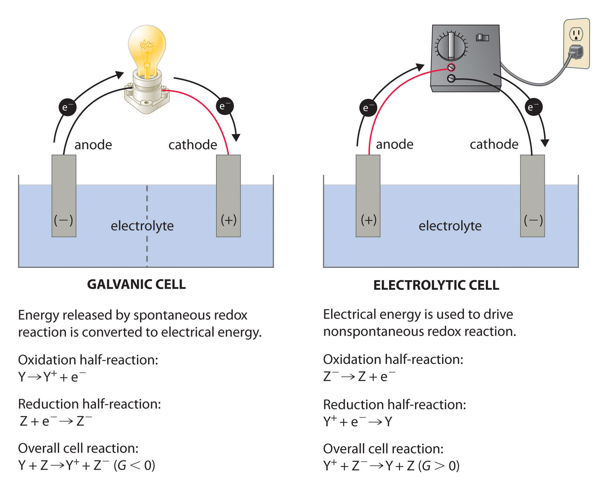A galvanic cell (left) transforms the energy released by a spontaneous redox reaction into electrical energy that can be used to perform work. The oxidative and reductive half-reactions usually occur in separate compartments that are connected by an external electrical circuit; in addition, a second connection that allows ions to flow between the compartments (shown here as a vertical dashed line to represent a porous barrier) is necessary to maintain electrical neutrality. The potential difference between the electrodes (voltage) causes electrons to flow from the reductant to the oxidant through the external circuit, generating an electric current. In an electrolytic cell (right), an external source of electrical energy is used to generate a potential difference between the electrodes that forces electrons to flow, driving a nonspontaneous redox reaction; only a single compartment is employed in most applications. In both kinds of electrochemical cells, the anode is the electrode at which the oxidation half-reaction occurs, and the cathode is the electrode at which the reduction half-reaction occurs.
To illustrate the basic principles of a galvanic cell, let’s consider the reaction of metallic zinc with cupric ion (Cu2+) to give copper metal and Zn2+ ion. The balanced chemical equation is as follows:
Equation 19.4
Zn(s) + Cu2+(aq) → Zn2+(aq) + Cu(s)We can cause this reaction to occur by inserting a zinc rod into an aqueous solution of copper(II) sulfate. As the reaction proceeds, the zinc rod dissolves, and a mass of metallic copper forms (Figure 19.2 "The Reaction of Metallic Zinc with Aqueous Copper(II) Ions in a Single Compartment"). These changes occur spontaneously, but all the energy released is in the form of heat rather than in a form that can be used to do work.
Figure 19.2 The Reaction of Metallic Zinc with Aqueous Copper(II) Ions in a Single Compartment

When a zinc rod is inserted into a beaker that contains an aqueous solution of copper(II) sulfate, a spontaneous redox reaction occurs: the zinc electrode dissolves to give Zn2+(aq) ions, while Cu2+(aq) ions are simultaneously reduced to metallic copper. The reaction occurs so rapidly that the copper is deposited as very fine particles that appear black, rather than the usual reddish color of copper.
This same reaction can be carried out using the galvanic cell illustrated in part (a) in Figure 19.3 "The Reaction of Metallic Zinc with Aqueous Copper(II) Ions in a Galvanic Cell". To assemble the cell, a copper strip is inserted into a beaker that contains a 1 M solution of Cu2+ ions, and a zinc strip is inserted into a different beaker that contains a 1 M solution of Zn2+ ions. The two metal strips, which serve as electrodes, are connected by a wire, and the compartments are connected by a salt bridgeA U-shaped tube inserted into both solutions of a galvanic cell that contains a concentrated liquid or gelled electrolyte and completes the circuit between the anode and the cathode., a U-shaped tube inserted into both solutions that contains a concentrated liquid or gelled electrolyte. The ions in the salt bridge are selected so that they do not interfere with the electrochemical reaction by being oxidized or reduced themselves or by forming a precipitate or complex; commonly used cations and anions are Na+ or K+ and NO3− or SO42−, respectively. (The ions in the salt bridge do not have to be the same as those in the redox couple in either compartment.) When the circuit is closed, a spontaneous reaction occurs: zinc metal is oxidized to Zn2+ ions at the zinc electrode (the anode), and Cu2+ ions are reduced to Cu metal at the copper electrode (the cathode). As the reaction progresses, the zinc strip dissolves, and the concentration of Zn2+ ions in the Zn2+ solution increases; simultaneously, the copper strip gains mass, and the concentration of Cu2+ ions in the Cu2+ solution decreases (part (b) in Figure 19.3 "The Reaction of Metallic Zinc with Aqueous Copper(II) Ions in a Galvanic Cell"). Thus we have carried out the same reaction as we did using a single beaker, but this time the oxidative and reductive half-reactions are physically separated from each other. The electrons that are released at the anode flow through the wire, producing an electric current. Galvanic cells therefore transform chemical energy into electrical energy that can then be used to do work.
Figure 19.3 The Reaction of Metallic Zinc with Aqueous Copper(II) Ions in a Galvanic Cell
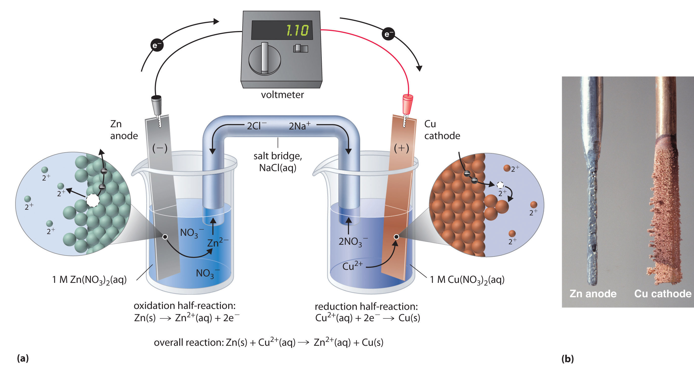(a) A galvanic cell can be constructed by inserting a copper strip into a beaker that contains an aqueous 1 M solution of Cu2+ ions and a zinc strip into a different beaker that contains an aqueous 1 M solution of Zn2+ ions. The two metal strips are connected by a wire that allows electricity to flow, and the beakers are connected by a salt bridge. When the switch is closed to complete the circuit, the zinc electrode (the anode) is spontaneously oxidized to Zn2+ ions in the left compartment, while Cu2+ ions are simultaneously reduced to copper metal at the copper electrode (the cathode). (b) As the reaction progresses, the Zn anode loses mass as it dissolves to give Zn2+(aq) ions, while the Cu cathode gains mass as Cu2+(aq) ions are reduced to copper metal that is deposited on the cathode.
The electrolyte in the salt bridge serves two purposes: it completes the circuit by carrying electrical charge and maintains electrical neutrality in both solutions by allowing ions to migrate between them. The identity of the salt in a salt bridge is unimportant, as long as the component ions do not react or undergo a redox reaction under the operating conditions of the cell. Without such a connection, the total positive charge in the Zn2+ solution would increase as the zinc metal dissolves, and the total positive charge in the Cu2+ solution would decrease. The salt bridge allows charges to be neutralized by a flow of anions into the Zn2+ solution and a flow of cations into the Cu2+ solution. In the absence of a salt bridge or some other similar connection, the reaction would rapidly cease because electrical neutrality could not be maintained.

A galvanic cell. This galvanic cell illustrates the use of a salt bridge to connect two solutions.
A voltmeter can be used to measure the difference in electrical potential between the two compartments. Opening the switch that connects the wires to the anode and the cathode prevents a current from flowing, so no chemical reaction occurs. With the switch closed, however, the external circuit is closed, and an electric current can flow from the anode to the cathode. The potential (Ecell)Related to the energy needed to move a charged particle in an electric field, it is the difference in electrical potential beween two half-reactions. of the cell, measured in volts, is the difference in electrical potential between the two half-reactions and is related to the energy needed to move a charged particle in an electric field. In the cell we have described, the voltmeter indicates a potential of 1.10 V (part (a) in Figure 19.3 "The Reaction of Metallic Zinc with Aqueous Copper(II) Ions in a Galvanic Cell"). Because electrons from the oxidation half-reaction are released at the anode, the anode in a galvanic cell is negatively charged. The cathode, which attracts electrons, is positively charged.
Not all electrodes undergo a chemical transformation during a redox reaction. The electrode can be made from an inert, highly conducting metal such as platinum to prevent it from reacting during a redox process, where it does not appear in the overall electrochemical reaction. This phenomenon is illustrated in Example 1.
A galvanic (voltaic) cell converts the energy released by a spontaneous chemical reaction to electrical energy. An electrolytic cell consumes electrical energy from an external source to drive a nonspontaneous chemical reaction.
A chemist has constructed a galvanic cell consisting of two beakers. One beaker contains a strip of tin immersed in aqueous sulfuric acid, and the other contains a platinum electrode immersed in aqueous nitric acid. The two solutions are connected by a salt bridge, and the electrodes are connected by a wire. Current begins to flow, and bubbles of a gas appear at the platinum electrode. The spontaneous redox reaction that occurs is described by the following balanced chemical equation:
3Sn(s) + 2NO3−(aq) + 8H+(aq) → 3Sn2+(aq) + 2NO(g) + 4H2O(l)For this galvanic cell,
Given: galvanic cell and redox reaction
Asked for: half-reactions, identity of anode and cathode, and electrode assignment as positive or negative
Strategy:
A Identify the oxidation half-reaction and the reduction half-reaction. Then identify the anode and cathode from the half-reaction that occurs at each electrode.
B From the direction of electron flow, assign each electrode as either positive or negative.
Solution:
A In the reduction half-reaction, nitrate is reduced to nitric oxide. (The nitric oxide would then react with oxygen in the air to form NO2, with its characteristic red-brown color.) In the oxidation half-reaction, metallic tin is oxidized. The half-reactions corresponding to the actual reactions that occur in the system are as follows:
reduction: NO3−(aq) + 4H+(aq) + 3e− → NO(g) + 2H2O(l) oxidation: Sn(s) → Sn2+(aq) + 2e−Thus nitrate is reduced to NO, while the tin electrode is oxidized to Sn2+.
Exercise
Consider a simple galvanic cell consisting of two beakers connected by a salt bridge. One beaker contains a solution of MnO4− in dilute sulfuric acid and has a Pt electrode. The other beaker contains a solution of Sn2+ in dilute sulfuric acid, also with a Pt electrode. When the two electrodes are connected by a wire, current flows and a spontaneous reaction occurs that is described by the following balanced chemical equation:
2MnO4−(aq) + 5Sn2+(aq) + 16H+(aq) → 2Mn2+(aq) + 5Sn4+(aq) + 8H2O(l)For this galvanic cell,
Answer:
Because it is somewhat cumbersome to describe any given galvanic cell in words, a more convenient notation has been developed. In this line notation, called a cell diagram, the identity of the electrodes and the chemical contents of the compartments are indicated by their chemical formulas, with the anode written on the far left and the cathode on the far right. Phase boundaries are shown by single vertical lines, and the salt bridge, which has two phase boundaries, by a double vertical line. Thus the cell diagram for the Zn/Cu cell shown in part (a) in Figure 19.3 "The Reaction of Metallic Zinc with Aqueous Copper(II) Ions in a Galvanic Cell" is written as follows:
Figure 19.4
A cell diagram includes solution concentrations when they are provided.
Galvanic cells can have arrangements other than the examples we have seen so far. For example, the voltage produced by a redox reaction can be measured more accurately using two electrodes immersed in a single beaker containing an electrolyte that completes the circuit. This arrangement reduces errors caused by resistance to the flow of charge at a boundary, called the junction potential. One example of this type of galvanic cell is as follows:
Equation 19.5
Pt(s)∣H2(g)∣HCl(aq)∣AgCl(s)∣Ag(s)This cell diagram does not include a double vertical line representing a salt bridge because there is no salt bridge providing a junction between two dissimilar solutions. Moreover, solution concentrations have not been specified, so they are not included in the cell diagram. The half-reactions and the overall reaction for this cell are as follows:
Equation 19.6
cathode reaction: AgCl(s) + e− → Ag(s) + Cl−(aq)Equation 19.7
Equation 19.8
A single-compartment galvanic cell will initially exhibit the same voltage as a galvanic cell constructed using separate compartments, but it will discharge rapidly because of the direct reaction of the reactant at the anode with the oxidized member of the cathodic redox couple. Consequently, cells of this type are not particularly useful for producing electricity.
Draw a cell diagram for the galvanic cell described in Example 1. The balanced chemical reaction is as follows:
3Sn(s) + 2NO3−(aq) + 8H+(aq) → 3Sn2+(aq) + 2NO(g) + 4H2O(l)Given: galvanic cell and redox reaction
Asked for: cell diagram
Strategy:
Using the symbols described, write the cell diagram beginning with the oxidation half-reaction on the left.
Solution:
The anode is the tin strip, and the cathode is the Pt electrode. Beginning on the left with the anode, we indicate the phase boundary between the electrode and the tin solution by a vertical bar. The anode compartment is thus Sn(s)∣Sn2+(aq). We could include H2SO4(aq) with the contents of the anode compartment, but the sulfate ion (as HSO4−) does not participate in the overall reaction, so it does not need to be specifically indicated. The cathode compartment contains aqueous nitric acid, which does participate in the overall reaction, together with the product of the reaction (NO) and the Pt electrode. These are written as HNO3(aq)∣NO(g)∣Pt(s), with single vertical bars indicating the phase boundaries. Combining the two compartments and using a double vertical bar to indicate the salt bridge,
Sn(s)∣Sn2+(aq)∥HNO3(aq)∣NO(g)∣Pt(s)The solution concentrations were not specified, so they are not included in this cell diagram.
Exercise
Draw a cell diagram for the following reaction, assuming the concentration of Ag+ and Mg2+ are each 1 M:
Mg(s) + 2Ag+(aq) → Mg2+(aq) + 2Ag(s)Answer: Mg(s)∣Mg2+(aq, 1 M)∥Ag+(aq, 1 M)∣Ag(s)
Electrochemistry is the study of the relationship between electricity and chemical reactions. The oxidation–reduction reaction that occurs during an electrochemical process consists of two half-reactions, one representing the oxidation process and one the reduction process. The sum of the half-reactions gives the overall chemical reaction. The overall redox reaction is balanced when the number of electrons lost by the reductant equals the number of electrons gained by the oxidant. An electric current is produced from the flow of electrons from the reductant to the oxidant. An electrochemical cell can either generate electricity from a spontaneous redox reaction or consume electricity to drive a nonspontaneous reaction. In a galvanic (voltaic) cell, the energy from a spontaneous reaction generates electricity, whereas in an electrolytic cell, electrical energy is consumed to drive a nonspontaneous redox reaction. Both types of cells use two electrodes that provide an electrical connection between systems that are separated in space. The oxidative half-reaction occurs at the anode, and the reductive half-reaction occurs at the cathode. A salt bridge connects the separated solutions, allowing ions to migrate to either solution to ensure the system’s electrical neutrality. A voltmeter is a device that measures the flow of electric current between two half-reactions. The potential of a cell, measured in volts, is the energy needed to move a charged particle in an electric field. An electrochemical cell can be described using line notation called a cell diagram, in which vertical lines indicate phase boundaries and the location of the salt bridge. Resistance to the flow of charge at a boundary is called the junction potential.
Is 2NaOH(aq) + H2SO4(aq) → Na2SO4(aq) + 2H2O(l) an oxidation–reduction reaction? Why or why not?
If two half-reactions are physically separated, how is it possible for a redox reaction to occur? What is the name of the apparatus in which two half-reactions are carried out simultaneously?
What is the difference between a galvanic cell and an electrolytic cell? Which would you use to generate electricity?
What is the purpose of a salt bridge in a galvanic cell? Is it always necessary to use a salt bridge in a galvanic cell?
One criterion for a good salt bridge is that it contains ions that have similar rates of diffusion in aqueous solution, as K+ and Cl− ions do. What would happen if the diffusion rates of the anions and cations differed significantly?
It is often more accurate to measure the potential of a redox reaction by immersing two electrodes in a single beaker rather than in two beakers. Why?
A large difference in cation/anion diffusion rates would increase resistance in the salt bridge and limit electron flow through the circuit.
Copper(I) sulfate forms a bright blue solution in water. If a piece of zinc metal is placed in a beaker of aqueous CuSO4 solution, the blue color fades with time, the zinc strip begins to erode, and a black solid forms around the zinc strip. What is happening? Write half-reactions to show the chemical changes that are occurring. What will happen if a piece of copper metal is placed in a colorless aqueous solution of ZnCl2?
Consider the following spontaneous redox reaction: NO3−(aq) + H+(aq) + SO32−(aq) → SO42−(aq) + HNO2(aq).
The reaction Pb(s) + 2VO2+(aq) + 4H+(aq) → Pb2+(aq) + 2V3+(aq) + 2H2O(l) occurs spontaneously.
Phenolphthalein is an indicator that turns pink under basic conditions. When an iron nail is placed in a gel that contains [Fe(CN)6]3−, the gel around the nail begins to turn pink. What is occurring? Write the half-reactions and then write the overall redox reaction.
Sulfate is reduced to HS− in the presence of glucose, which is oxidized to bicarbonate. Write the two half-reactions corresponding to this process. What is the equation for the overall reaction?
Write the spontaneous half-reactions and the overall reaction for each proposed cell diagram. State which half-reaction occurs at the anode and which occurs at the cathode.
For each galvanic cell represented by these cell diagrams, determine the spontaneous half-reactions and the overall reaction. Indicate which reaction occurs at the anode and which occurs at the cathode.
For each redox reaction, write the half-reactions and draw the cell diagram for a galvanic cell in which the overall reaction occurs spontaneously. Identify each electrode as either positive or negative.
Write the half-reactions for each overall reaction, decide whether the reaction will occur spontaneously, and construct a cell diagram for a galvanic cell in which a spontaneous reaction will occur.
Write the half-reactions for each overall reaction, decide whether the reaction will occur spontaneously, and construct a cell diagram for a galvanic cell in which a spontaneous reaction will occur.
reduction: SO42−(aq) + 9H+(aq) + 8e− → HS−(aq) + 4H2O(l) oxidation: C6H12O6(aq) + 12H2O(l) → 6HCO3−(g) + 30H+(aq) + 24e− overall: C6H12O6(aq) + 3SO42−(aq) → 6HCO3−(g) + 3H+(aq) + 3HS−(aq)
reduction: 2H+(aq) + 2e− → H2(aq); cathode;
oxidation: Zn(s) → Zn2+(aq) + 2e−; anode;
overall: Zn(s) + 2H+(aq) → Zn2+(aq) + H2(aq)
reduction: AgCl(s) + e− → Ag(s) + Cl−(aq); cathode;
oxidation: H2(g) → 2H+(aq) + 2e−; anode;
overall: AgCl(s) + H2(g) → 2H+(aq) + Ag(s) + Cl−(aq)
reduction: Fe3+(aq) + e− → Fe2+(aq); cathode;
oxidation: H2(g) → 2H+(aq) + 2e−; anode;
overall: 2Fe3+(aq) + H2(g) → 2H+(aq) + 2Fe2+(aq)
In a galvanic cell, current is produced when electrons flow externally through the circuit from the anode to the cathode because of a difference in potential energy between the two electrodes in the electrochemical cell. In the Zn/Cu system, the valence electrons in zinc have a substantially higher potential energy than the valence electrons in copper because of shielding of the s electrons of zinc by the electrons in filled d orbitals. (For more information on atomic orbitals, see Chapter 6 "The Structure of Atoms", Section 6.5 "Atomic Orbitals and Their Energies".) Hence electrons flow spontaneously from zinc to copper(II) ions, forming zinc(II) ions and metallic copper (Figure 19.5 "Potential Energy Difference in the Zn/Cu System"). Just like water flowing spontaneously downhill, which can be made to do work by forcing a waterwheel, the flow of electrons from a higher potential energy to a lower one can also be harnessed to perform work.
Figure 19.5 Potential Energy Difference in the Zn/Cu System
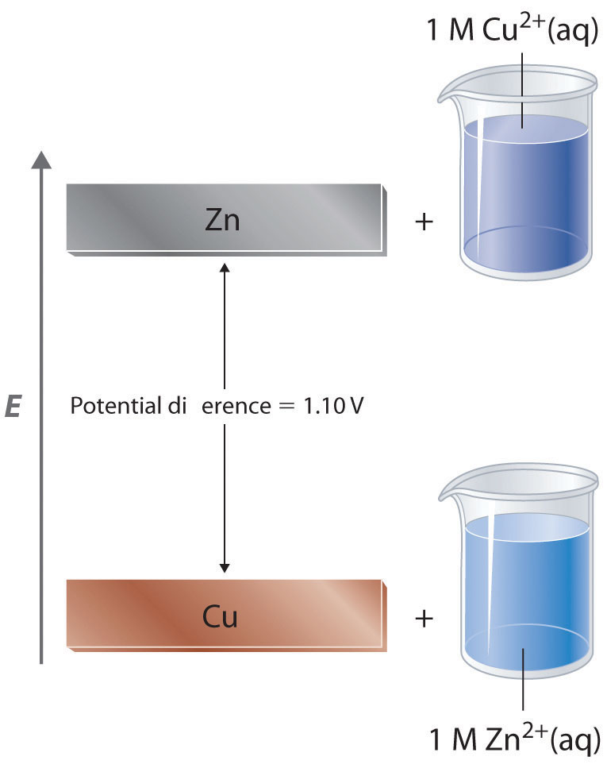The potential energy of a system consisting of metallic Zn and aqueous Cu2+ ions is greater than the potential energy of a system consisting of metallic Cu and aqueous Zn2+ ions. Much of this potential energy difference is because the valence electrons of metallic Zn are higher in energy than the valence electrons of metallic Cu. Because the Zn(s) + Cu2+(aq) system is higher in energy by 1.10 V than the Cu(s) + Zn2+(aq) system, energy is released when electrons are transferred from Zn to Cu2+ to form Cu and Zn2+.
Because the potential energy of valence electrons differs greatly from one substance to another, the voltage of a galvanic cell depends partly on the identity of the reacting substances. If we construct a galvanic cell similar to the one in part (a) in Figure 19.3 "The Reaction of Metallic Zinc with Aqueous Copper(II) Ions in a Galvanic Cell" but instead of copper use a strip of cobalt metal and 1 M Co2+ in the cathode compartment, the measured voltage is not 1.10 V but 0.51 V. Thus we can conclude that the difference in potential energy between the valence electrons of cobalt and zinc is less than the difference between the valence electrons of copper and zinc by 0.59 V.
The measured potential of a cell also depends strongly on the concentrations of the reacting species and the temperature of the system. To develop a scale of relative potentials that will allow us to predict the direction of an electrochemical reaction and the magnitude of the driving force for the reaction, the potentials for oxidations and reductions of different substances must be measured under comparable conditions. To do this, chemists use the standard cell potentialThe potential of an electrochemical cell measured under standard conditions (1 M for solutions, 1 atm for gases, and pure solids or pure liquids for other substances) and at a fixed temperature (usually 298 K). (E°cell), defined as the potential of a cell measured under standard conditions—that is, with all species in their standard states (1 M for solutions,Concentrated solutions of salts (about 1 M) generally do not exhibit ideal behavior, and the actual standard state corresponds to an activity of 1 rather than a concentration of 1 M. Corrections for nonideal behavior are important for precise quantitative work but not for the more qualitative approach that we are taking here. 1 atm for gases, pure solids or pure liquids for other substances) and at a fixed temperature, usually 25°C.
Measured redox potentials depend on the potential energy of valence electrons, the concentrations of the species in the reaction, and the temperature of the system.
It is physically impossible to measure the potential of a single electrode: only the difference between the potentials of two electrodes can be measured. (This is analogous to measuring absolute enthalpies or free energies. Recall from Chapter 18 "Chemical Thermodynamics" that only differences in enthalpy and free energy can be measured.) We can, however, compare the standard cell potentials for two different galvanic cells that have one kind of electrode in common. This allows us to measure the potential difference between two dissimilar electrodes. For example, the measured standard cell potential (E°) for the Zn/Cu system is 1.10 V, whereas E° for the corresponding Zn/Co system is 0.51 V. This implies that the potential difference between the Co and Cu electrodes is 1.10 V − 0.51 V = 0.59 V. In fact, that is exactly the potential measured under standard conditions if a cell is constructed with the following cell diagram:
Equation 19.9
This cell diagram corresponds to the oxidation of a cobalt anode and the reduction of Cu2+ in solution at the copper cathode.
All tabulated values of standard electrode potentials by convention are listed for a reaction written as a reduction, not as an oxidation, to be able to compare standard potentials for different substances. (Standard electrode potentials for various reduction reactions are given in Chapter 29 "Appendix E: Standard Reduction Potentials at 25°C".) The standard cell potential (E°cell) is therefore the difference between the tabulated reduction potentials of the two half-reactions, not their sum:
Equation 19.10
E°cell = E°cathode − E°anodeIn contrast, recall that half-reactions are written to show the reduction and oxidation reactions that actually occur in the cell, so the overall cell reaction is written as the sum of the two half-reactions. According to Equation 19.10, when we know the standard potential for any single half-reaction, we can obtain the value of the standard potential of many other half-reactions by measuring the standard potential of the corresponding cell.
The overall cell reaction is the sum of the two half-reactions, but the cell potential is the difference between the reduction potentials: E°cell = E°cathode − E°anode.
Although it is impossible to measure the potential of any electrode directly, we can choose a reference electrode whose potential is defined as 0 V under standard conditions. The standard hydrogen electrode (SHE)The electrode chosen as the reference for all other electrodes, which has been assigned a standard potential of 0 V and consists of a Pt wire in contact with an aqueous solution that contains 1 M in equilibrium with gas at a pressure of 1 atm at the Pt-solution interface. is universally used for this purpose and is assigned a standard potential of 0 V. It consists of a strip of platinum wire in contact with an aqueous solution containing 1 M H+. The [H+] in solution is in equilibrium with H2 gas at a pressure of 1 atm at the Pt-solution interface (Figure 19.6 "The Standard Hydrogen Electrode"). Protons are reduced or hydrogen molecules are oxidized at the Pt surface according to the following equation:
Equation 19.11
One especially attractive feature of the SHE is that the Pt metal electrode is not consumed during the reaction.
Figure 19.6 The Standard Hydrogen Electrode
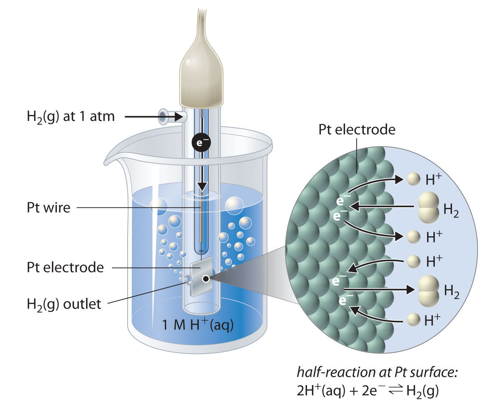The SHE consists of platinum wire that is connected to a Pt surface in contact with an aqueous solution containing 1 M H+ in equilibrium with H2 gas at a pressure of 1 atm. In the molecular view, the Pt surface catalyzes the oxidation of hydrogen molecules to protons or the reduction of protons to hydrogen gas. (Water is omitted for clarity.) The standard potential of the SHE is arbitrarily assigned a value of 0 V.
Figure 19.7 "Determining a Standard Electrode Potential Using a Standard Hydrogen Electrode" shows a galvanic cell that consists of a SHE in one beaker and a Zn strip in another beaker containing a solution of Zn2+ ions. When the circuit is closed, the voltmeter indicates a potential of 0.76 V. The zinc electrode begins to dissolve to form Zn2+, and H+ ions are reduced to H2 in the other compartment. Thus the hydrogen electrode is the cathode, and the zinc electrode is the anode. The diagram for this galvanic cell is as follows:
Equation 19.12
Zn(s)∣Zn2+(aq)∥H+(aq, 1 M)∣H2(g, 1 atm)∣Pt(s)The half-reactions that actually occur in the cell and their corresponding electrode potentials are as follows:
Equation 19.13
Equation 19.14
Equation 19.15
Figure 19.7 Determining a Standard Electrode Potential Using a Standard Hydrogen Electrode
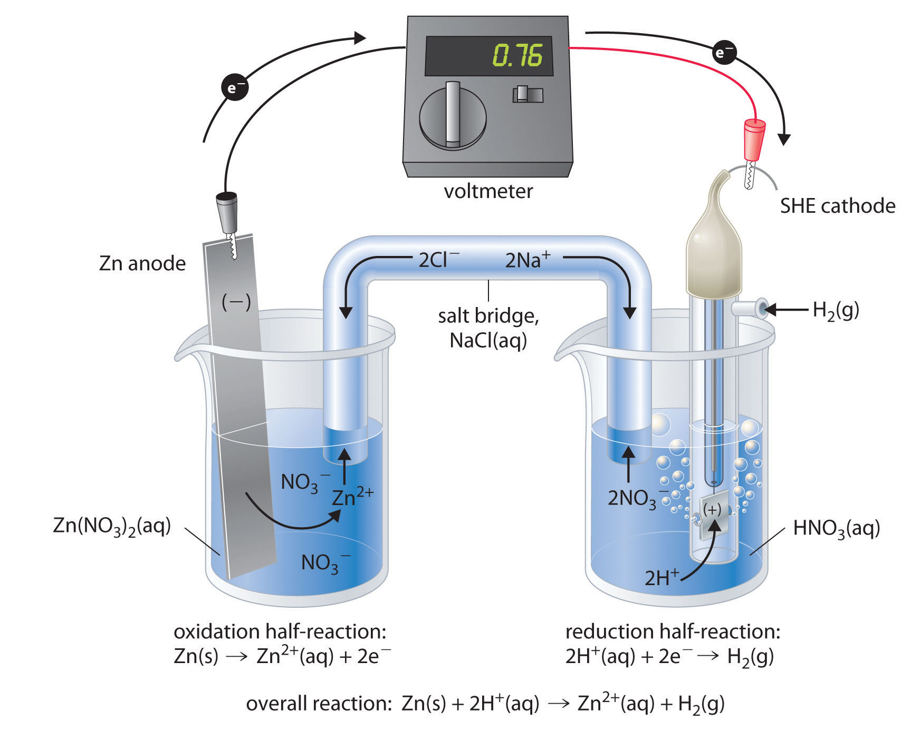The voltmeter shows that the standard cell potential of a galvanic cell consisting of a SHE and a Zn/Zn2+ couple is E°cell = 0.76 V. Because the zinc electrode in this cell dissolves spontaneously to form Zn2+(aq) ions while H+(aq) ions are reduced to H2 at the platinum surface, the standard electrode potential of the Zn2+/Zn couple is −0.76 V.
Although the reaction at the anode is an oxidation, by convention its tabulated E° value is reported as a reduction potential. The potential of a half-reaction measured against the SHE under standard conditions is called the standard electrode potentialThe potential of a half-reaction measured against the SHE under standard conditions. for that half-reaction.In this example, the standard reduction potential for Zn2+(aq) + 2e− → Zn(s) is −0.76 V, which means that the standard electrode potential for the reaction that occurs at the anode, the oxidation of Zn to Zn2+, often called the Zn/Zn2+ redox couple, or the Zn/Zn2+ couple, is −(−0.76 V) = 0.76 V. We must therefore subtract E°anode from E°cathode to obtain E°cell: 0 − (−0.76 V) = 0.76 V.
Because electrical potential is the energy needed to move a charged particle in an electric field, standard electrode potentials for half-reactions are intensive properties and do not depend on the amount of substance involved. Consequently, E° values are independent of the stoichiometric coefficients for the half-reaction, and, most important, the coefficients used to produce a balanced overall reaction do not affect the value of the cell potential.
E° values do not depend on the stoichiometric coefficients for a half-reaction.
To measure the potential of the Cu/Cu2+ couple, we can construct a galvanic cell analogous to the one shown in Figure 19.7 "Determining a Standard Electrode Potential Using a Standard Hydrogen Electrode" but containing a Cu/Cu2+ couple in the sample compartment instead of Zn/Zn2+. When we close the circuit this time, the measured potential for the cell is negative (−0.34 V) rather than positive. The negative value of E°cell indicates that the direction of spontaneous electron flow is the opposite of that for the Zn/Zn2+ couple. Hence the reactions that occur spontaneously, indicated by a positive E°cell, are the reduction of Cu2+ to Cu at the copper electrode. The copper electrode gains mass as the reaction proceeds, and H2 is oxidized to H+ at the platinum electrode. In this cell, the copper strip is the cathode, and the hydrogen electrode is the anode. The cell diagram therefore is written with the SHE on the left and the Cu2+/Cu couple on the right:
Equation 19.16
Pt(s)∣H2(g, 1 atm)∣H+(aq, 1 M)∥Cu2+(aq, 1 M)∣Cu(s)The half-cell reactions and potentials of the spontaneous reaction are as follows:
Equation 19.17
Equation 19.18
Equation 19.19
Thus the standard electrode potential for the Cu2+/Cu couple is 0.34 V.
In Chapter 4 "Reactions in Aqueous Solution", we described a method for balancing redox reactions using oxidation numbers. Oxidation numbers were assigned to each atom in a redox reaction to identify any changes in the oxidation states. Here we present an alternative approach to balancing redox reactions, the half-reaction method, in which the overall redox reaction is divided into an oxidation half-reaction and a reduction half-reaction, each balanced for mass and charge. This method more closely reflects the events that take place in an electrochemical cell, where the two half-reactions may be physically separated from each other.
We can illustrate how to balance a redox reaction using half-reactions with the reaction that occurs when Drano, a commercial solid drain cleaner, is poured into a clogged drain. Drano contains a mixture of sodium hydroxide and powdered aluminum, which in solution reacts to produce hydrogen gas:
Equation 19.20
Al(s) + OH−(aq) → Al(OH)4−(aq) + H2(g)In this reaction, Al(s) is oxidized to Al3+, and H+ in water is reduced to H2 gas, which bubbles through the solution, agitating it and breaking up the clogs.
The overall redox reaction is composed of a reduction half-reaction and an oxidation half-reaction. From the standard electrode potentials listed in Chapter 29 "Appendix E: Standard Reduction Potentials at 25°C", we find the corresponding half-reactions that describe the reduction of H+ ions in water to H2 and the oxidation of Al to Al3+ in basic solution:
Equation 19.21
reduction: 2H2O(l) + 2e− → 2OH−(aq) + H2(g)Equation 19.22
oxidation: Al(s) + 4OH−(aq) → Al(OH)4−(aq) + 3e−The half-reactions chosen must exactly reflect the reaction conditions, such as the basic conditions shown here. Moreover, the physical states of the reactants and the products must be identical to those given in the overall reaction, whether gaseous, liquid, solid, or in solution.
In Equation 19.21, two H+ ions gain one electron each in the reduction; in Equation 19.22, the aluminum atom loses three electrons in the oxidation. The charges are balanced by multiplying the reduction half-reaction (Equation 19.21) by 3 and the oxidation half-reaction (Equation 19.22) by 2 to give the same number of electrons in both half-reactions:
Equation 19.23
reduction: 6H2O(l) + 6e− → 6OH−(aq) + 3H2(g)Equation 19.24
oxidation: 2Al(s) + 8OH−(aq) → 2Al(OH)4−(aq) + 6e−Adding the two half-reactions,
Equation 19.25
6H2O(l) + 2Al(s) + 8OH−(aq) → 2Al(OH)4−(aq) + 3H2(g) + 6OH−(aq)Simplifying by canceling substances that appear on both sides of the equation,
Equation 19.26
6H2O(l) + 2Al(s) + 2OH−(aq) → 2Al(OH)4−(aq) + 3H2(g)We have a −2 charge on the left side of the equation and a −2 charge on the right side. Thus the charges are balanced, but we must also check that atoms are balanced:
Equation 19.27
2Al + 8O + 14H = 2Al + 8O + 14HThe atoms also balance, so Equation 19.26 is a balanced chemical equation for the redox reaction depicted in Equation 19.20.
The half-reaction method requires that half-reactions exactly reflect reaction conditions, and the physical states of the reactants and the products must be identical to those in the overall reaction.
We can also balance a redox reaction by first balancing the atoms in each half-reaction and then balancing the charges. With this alternative method, we do not need to use the half-reactions listed in Chapter 29 "Appendix E: Standard Reduction Potentials at 25°C" but instead focus on the atoms whose oxidation states change, as illustrated in the following steps:
Step 1: Write the reduction half-reaction and the oxidation half-reaction.
For the reaction shown in Equation 19.20, hydrogen is reduced from H+ in OH− to H2, and aluminum is oxidized from Al0 to Al3+:
Equation 19.28
reduction: OH−(aq) → H2(g)Equation 19.29
oxidation: Al(s) → Al(OH)4−(aq)Step 2: Balance the atoms by balancing elements other than O and H. Then balance O atoms by adding H2O and balance H atoms by adding H+.
Elements other than O and H in the previous two equations are balanced as written, so we proceed with balancing the O atoms. We can do this by adding water to the appropriate side of each half-reaction:
Equation 19.30
reduction: OH−(aq) → H2(g) + H2O(l)Equation 19.31
oxidation: Al(s) + 4H2O(l) → Al(OH)4−(aq)Balancing H atoms by adding H+, we obtain the following:
Equation 19.32
reduction: OH−(aq) + 3H+(aq) → H2(g) + H2O(l)Equation 19.33
oxidation: Al(s) + 4H2O(l) → Al(OH)4−(aq) + 4H+(aq)We have now balanced the atoms in each half-reaction, but the charges are not balanced.
Step 3: Balance the charges in each half-reaction by adding electrons.
Two electrons are gained in the reduction of H+ ions to H2, and three electrons are lost during the oxidation of Al0 to Al3+:
Equation 19.34
reduction: OH−(aq) + 3H+(aq) + 2e− → H2(g) + H2O(l)Equation 19.35
oxidation: Al(s) + 4H2O(l) → Al(OH)4−(aq) + 4H+(aq) + 3e−Step 4: Multiply the reductive and oxidative half-reactions by appropriate integers to obtain the same number of electrons in both half-reactions.
In this case, we multiply Equation 19.34 (the reductive half-reaction) by 3 and Equation 19.35 (the oxidative half-reaction) by 2 to obtain the same number of electrons in both half-reactions:
Equation 19.36
reduction: 3OH−(aq) + 9H+(aq) + 6e− → 3H2(g) + 3H2O(l)Equation 19.37
oxidation: 2Al(s) + 8H2O(l) → 2Al(OH)4−(aq) + 8H+(aq) + 6e−Step 5: Add the two half-reactions and cancel substances that appear on both sides of the equation.
Adding and, in this case, canceling 8H+, 3H2O, and 6e−,
Equation 19.38
2Al(s) + 5H2O(l) + 3OH−(aq) + H+(aq) → 2Al(OH)4−(aq) + 3H2(g)We have three OH− and one H+ on the left side. Neutralizing the H+ gives us a total of 5H2O + H2O = 6H2O and leaves 2OH− on the left side:
Equation 19.39
2Al(s) + 6H2O(l) + 2OH−(aq) → 2Al(OH)4−(aq) + 3H2(g)Step 6: Check to make sure that all atoms and charges are balanced.
Equation 19.39 is identical to Equation 19.26, obtained using the first method, so the charges and numbers of atoms on each side of the equation balance.
Figure 19.8 The Reaction of Dichromate with Iodide

The reaction of a yellow solution of sodium dichromate with a colorless solution of sodium iodide produces a deep amber solution that contains a green Cr3+(aq) complex and brown I2(aq) ions.
In acidic solution, the redox reaction of dichromate ion (Cr2O72−) and iodide (I−) can be monitored visually. The yellow dichromate solution reacts with the colorless iodide solution to produce a solution that is deep amber due to the presence of a green Cr3+(aq) complex and brown I2(aq) ions (Figure 19.8 "The Reaction of Dichromate with Iodide"):
Cr2O72−(aq) + I−(aq) → Cr3+(aq) + I2(aq)Balance this equation using half-reactions.
Given: redox reaction and Chapter 29 "Appendix E: Standard Reduction Potentials at 25°C"
Asked for: balanced chemical equation using half-reactions
Strategy:
Follow the steps to balance the redox reaction using the half-reaction method.
Solution:
From the standard electrode potentials listed in Chapter 29 "Appendix E: Standard Reduction Potentials at 25°C", we find the half-reactions corresponding to the overall reaction:
reduction: Cr2O72−(aq) + 14H+(aq) + 6e− → 2Cr3+(aq) + 7H2O(l) oxidation: 2I−(aq) → I2(aq) + 2e−Balancing the number of electrons by multiplying the oxidation reaction by 3,
oxidation: 6I−(aq) → 3I2(aq) + 6e−Adding the two half-reactions and canceling electrons,
Cr2O72−(aq) + 14H+(aq) + 6I−(aq) → 2Cr3+(aq) + 7H2O(l) + 3I2(aq)We must now check to make sure the charges and atoms on each side of the equation balance:
The charges and atoms balance, so our equation is balanced.
We can also use the alternative procedure, which does not require the half-reactions listed in Chapter 29 "Appendix E: Standard Reduction Potentials at 25°C".
Step 1: Chromium is reduced from Cr6+ in Cr2O72−to Cr3+, and I− ions are oxidized to I2. Dividing the reaction into two half-reactions,
reduction: Cr2O72−(aq) → Cr3+(aq) oxidation: I−(aq) → I2(aq)Step 2: Balancing the atoms other than oxygen and hydrogen,
reduction: Cr2O72−(aq) → 2Cr3+(aq) oxidation: 2I−(aq) → I2(aq)We now balance the O atoms by adding H2O—in this case, to the right side of the reduction half-reaction. Because the oxidation half-reaction does not contain oxygen, it can be ignored in this step.
reduction: Cr2O72−(aq) → 2Cr3+(aq) + 7H2O(l)Next we balance the H atoms by adding H+ to the left side of the reduction half-reaction. Again, we can ignore the oxidation half-reaction.
reduction: Cr2O72−(aq) + 14H+(aq) → + 2Cr3+(aq) + 7H2O(l)Step 3: We must now add electrons to balance the charges. The reduction half-reaction (2Cr+6 to 2Cr+3) has a +12 charge on the left and a +6 charge on the right, so six electrons are needed to balance the charge. The oxidation half-reaction (2I− to I2) has a −2 charge on the left side and a 0 charge on the right, so it needs two electrons to balance the charge:
reduction: Cr2O72−(aq) + 14H+(aq) + 6e− → 2Cr3+(aq) + 7H2O(l) oxidation: 2I−(aq) → I2(aq) + 2e−Step 4: To have the same number of electrons in both half-reactions, we must multiply the oxidation half-reaction by 3:
oxidation: 6I−(aq) → 3I2(s) + 6e−Step 5: Adding the two half-reactions and canceling substances that appear in both reactions,
Cr2O72−(aq) + 14H+(aq) + 6I−(aq) → 2Cr3+(aq) + 7H2O(l) + 3I2(aq)Step 6: This is the same equation we obtained using the first method. Thus the charges and atoms on each side of the equation balance.
Exercise
Copper is commonly found as the mineral covellite (CuS). The first step in extracting the copper is to dissolve the mineral in nitric acid (HNO3), which oxidizes sulfide to sulfate and reduces nitric acid to NO:
CuS(s) + HNO3(aq) → NO(g) + CuSO4(aq)Balance this equation using the half-reaction method.
Answer: 3CuS(s) + 8HNO3(aq) → 8NO(g) + 3CuSO4(aq) + 4H2O(l)
The standard cell potential for a redox reaction (E°cell) is a measure of the tendency of reactants in their standard states to form products in their standard states; consequently, it is a measure of the driving force for the reaction, which earlier we called voltage. We can use the two standard electrode potentials we found earlier to calculate the standard potential for the Zn/Cu cell represented by the following cell diagram:
Equation 19.40
Zn(s)∣Zn2+(aq, 1 M)∥Cu2+(aq, 1 M)∣Cu(s)We know the values of E°anode for the reduction of Zn2+ and E°cathode for the reduction of Cu2+, so we can calculate E°cell:
Equation 19.41
Equation 19.42
Equation 19.43
This is the same value that is observed experimentally. If the value of E°cell is positive, the reaction will occur spontaneously as written. If the value of E°cell is negative, then the reaction is not spontaneous, and it will not occur as written under standard conditions; it will, however, proceed spontaneously in the opposite direction.As we shall see in Section 19.7 "Electrolysis", this does not mean that the reaction cannot be made to occur at all under standard conditions. With a sufficient input of electrical energy, virtually any reaction can be forced to occur. Example 4 and its corresponding exercise illustrate how we can use measured cell potentials to calculate standard potentials for redox couples.
A positive E°cell means that the reaction will occur spontaneously as written. A negative E°cell means that the reaction will proceed spontaneously in the opposite direction.
A galvanic cell with a measured standard cell potential of 0.27 V is constructed using two beakers connected by a salt bridge. One beaker contains a strip of gallium metal immersed in a 1 M solution of GaCl3, and the other contains a piece of nickel immersed in a 1 M solution of NiCl2. The half-reactions that occur when the compartments are connected are as follows:
cathode: Ni2+(aq) + 2e− → Ni(s) anode: Ga(s) → Ga3+(aq) + 3e−If the potential for the oxidation of Ga to Ga3+ is 0.55 V under standard conditions, what is the potential for the oxidation of Ni to Ni2+?
Given: galvanic cell, half-reactions, standard cell potential, and potential for the oxidation half-reaction under standard conditions
Asked for: standard electrode potential of reaction occurring at the cathode
Strategy:
A Write the equation for the half-reaction that occurs at the anode along with the value of the standard electrode potential for the half-reaction.
B Use Equation 19.10 to calculate the standard electrode potential for the half-reaction that occurs at the cathode. Then reverse the sign to obtain the potential for the corresponding oxidation half-reaction under standard conditions.
Solution:
A We have been given the potential for the oxidation of Ga to Ga3+ under standard conditions, but to report the standard electrode potential, we must reverse the sign. For the reduction reaction Ga3+(aq) + 3e− → Ga(s), E°anode = −0.55 V.
B Using the value given for E°cell and the calculated value of E°anode, we can calculate the standard potential for the reduction of Ni2+ to Ni from Equation 19.10:
This is the standard electrode potential for the reaction Ni2+(aq) + 2e− → Ni(s). Because we are asked for the potential for the oxidation of Ni to Ni2+ under standard conditions, we must reverse the sign of E°cathode. Thus E° = −(−0.28 V) = 0.28 V for the oxidation. With three electrons consumed in the reduction and two produced in the oxidation, the overall reaction is not balanced. Recall, however, that standard potentials are independent of stoichiometry.
Exercise
A galvanic cell is constructed with one compartment that contains a mercury electrode immersed in a 1 M aqueous solution of mercuric acetate [Hg(CH3CO2)2] and one compartment that contains a strip of magnesium immersed in a 1 M aqueous solution of MgCl2. When the compartments are connected, a potential of 3.22 V is measured and the following half-reactions occur:
cathode: Hg2+(aq) + 2e− → Hg(l) anode: Mg(s) → Mg2+(aq) + 2e−If the potential for the oxidation of Mg to Mg2+ is 2.37 V under standard conditions, what is the standard electrode potential for the reaction that occurs at the anode?
Answer: 0.85 V
When using a galvanic cell to measure the concentration of a substance, we are generally interested in the potential of only one of the electrodes of the cell, the so-called indicator electrodeThe electrode of a galvanic cell whose potential is related to the concentration of the substance being measured., whose potential is related to the concentration of the substance being measured. To ensure that any change in the measured potential of the cell is due to only the substance being analyzed, the potential of the other electrode, the reference electrodeAn electrode in an galvanic cell whose potential is unaffected by the properties of the solution., must be constant. You are already familiar with one example of a reference electrode: the SHE. The potential of a reference electrode must be unaffected by the properties of the solution, and if possible, it should be physically isolated from the solution of interest. To measure the potential of a solution, we select a reference electrode and an appropriate indicator electrode. Whether reduction or oxidation of the substance being analyzed occurs depends on the potential of the half-reaction for the substance of interest (the sample) and the potential of the reference electrode.
The potential of any reference electrode should not be affected by the properties of the solution to be analyzed, and it should also be physically isolated.
There are many possible choices of reference electrode other than the SHE. The SHE requires a constant flow of highly flammable hydrogen gas, which makes it inconvenient to use. Consequently, two other electrodes are commonly chosen as reference electrodes. One is the silver–silver chloride electrodeA reference electrode that consists of a silver wire coated with a very thin layer of AgCl and dipped into a chloride ion solution with a fixed concentration., which consists of a silver wire coated with a very thin layer of AgCl that is dipped into a chloride ion solution with a fixed concentration. The cell diagram and reduction half-reaction are as follows:
Equation 19.44
If a saturated solution of KCl is used as the chloride solution, the potential of the silver–silver chloride electrode is 0.197 V versus the SHE. That is, 0.197 V must be subtracted from the measured value to obtain the standard electrode potential measured against the SHE.
A second common reference electrode is the saturated calomel electrode (SCE)A reference electrode that consists of a platinum wire inserted into a moist paste of liquid mercury (calomel; ) and KCl in an interior cell, which is surrounded by an aqueous KCl solution., which has the same general form as the silver–silver chloride electrode. The SCE consists of a platinum wire inserted into a moist paste of liquid mercury (Hg2Cl2; called calomel in the old chemical literature) and KCl. This interior cell is surrounded by an aqueous KCl solution, which acts as a salt bridge between the interior cell and the exterior solution (part (a) in Figure 19.9 "Three Common Types of Electrodes"). Although it sounds and looks complex, this cell is actually easy to prepare and maintain, and its potential is highly reproducible. The SCE cell diagram and corresponding half-reaction are as follows:
Equation 19.45
Pt(s)∣Hg2Cl2(s)∣KCl(aq, sat)Equation 19.46
Hg2Cl2(s) + 2e− → 2Hg(l) + 2Cl−(aq)Figure 19.9 Three Common Types of Electrodes
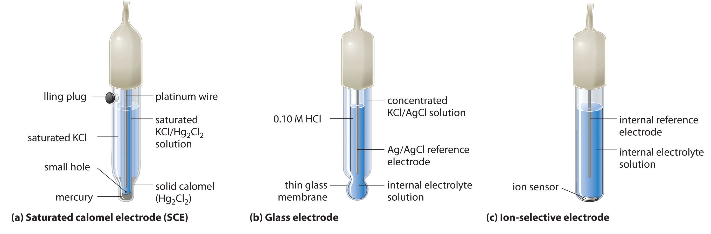(a) The SCE is a reference electrode that consists of a platinum wire inserted into a moist paste of liquid mercury (calomel; Hg2Cl2) and KCl. The interior cell is surrounded by an aqueous KCl solution, which acts as a salt bridge between the interior cell and the exterior solution. (b) In a glass electrode, an internal Ag/AgCl electrode is immersed in a 1 M HCl solution that is separated from the sample solution by a very thin glass membrane. The potential of the electrode depends on the H+ ion concentration of the sample. (c) The potential of an ion-selective electrode depends on the concentration of only a single ionic species in solution.
At 25°C, the potential of the SCE is 0.2415 V versus the SHE, which means that 0.2415 V must be subtracted from the potential versus an SCE to obtain the standard electrode potential.
One of the most common uses of electrochemistry is to measure the H+ ion concentration of a solution. A glass electrodeAn electrode used to measure the ion concentration of a solution and consisting of an internal Ag/AgCl electrode immersed in a 1 M HCl solution that is separated from the solution by a very thin glass membrane. is generally used for this purpose, in which an internal Ag/AgCl electrode is immersed in a 0.10 M HCl solution that is separated from the solution by a very thin glass membrane (part (b) in Figure 19.9 "Three Common Types of Electrodes"). The glass membrane absorbs protons, which affects the measured potential. The extent of the adsorption on the inner side is fixed because [H+] is fixed inside the electrode, but the adsorption of protons on the outer surface depends on the pH of the solution. The potential of the glass electrode depends on [H+] as follows (recall that pH = −log[H+]:
Equation 19.47
Eglass = E′ + (0.0591 V × log[H+]) = E′ − 0.0591 V × pHThe voltage E′ is a constant that depends on the exact construction of the electrode. Although it can be measured, in practice, a glass electrode is calibrated; that is, it is inserted into a solution of known pH, and the display on the pH meter is adjusted to the known value. Once the electrode is properly calibrated, it can be placed in a solution and used to determine an unknown pH.
Ion-selective electrodesAn electrode whose potential depends on only the concentration of a particular species in solution. are used to measure the concentration of a particular species in solution; they are designed so that their potential depends on only the concentration of the desired species (part (c) in Figure 19.9 "Three Common Types of Electrodes"). These electrodes usually contain an internal reference electrode that is connected by a solution of an electrolyte to a crystalline inorganic material or a membrane, which acts as the sensor. For example, one type of ion-selective electrode uses a single crystal of Eu-doped LaF3 as the inorganic material. When fluoride ions in solution diffuse to the surface of the solid, the potential of the electrode changes, resulting in a so-called fluoride electrode. Similar electrodes are used to measure the concentrations of other species in solution. Some of the species whose concentrations can be determined in aqueous solution using ion-selective electrodes and similar devices are listed in Table 19.1 "Some Species Whose Aqueous Concentrations Can Be Measured Using Electrochemical Methods".
Table 19.1 Some Species Whose Aqueous Concentrations Can Be Measured Using Electrochemical Methods
| Species | Type of Sample |
|---|---|
| H+ | laboratory samples, blood, soil, and ground and surface water |
| NH3/NH4+ | wastewater and runoff water |
| K+ | blood, wine, and soil |
| CO2/HCO3− | blood and groundwater |
| F− | groundwater, drinking water, and soil |
| Br− | grains and plant extracts |
| I− | milk and pharmaceuticals |
| NO3− | groundwater, drinking water, soil, and fertilizer |
The flow of electrons in an electrochemical cell depends on the identity of the reacting substances, the difference in the potential energy of their valence electrons, and their concentrations. The potential of the cell under standard conditions (1 M for solutions, 1 atm for gases, pure solids or liquids for other substances) and at a fixed temperature (25°C) is called the standard cell potential (E°cell). Only the difference between the potentials of two electrodes can be measured. By convention, all tabulated values of standard electrode potentials are listed as standard reduction potentials. The overall cell potential is the reduction potential of the reductive half-reaction minus the reduction potential of the oxidative half-reaction (E°cell = E°cathode − E°anode). The potential of the standard hydrogen electrode (SHE) is defined as 0 V under standard conditions. The potential of a half-reaction measured against the SHE under standard conditions is called its standard electrode potential. The standard cell potential is a measure of the driving force for a given redox reaction. All E° values are independent of the stoichiometric coefficients for the half-reaction. Redox reactions can be balanced using the half-reaction method, in which the overall redox reaction is divided into an oxidation half-reaction and a reduction half-reaction, each balanced for mass and charge. The half-reactions selected from tabulated lists must exactly reflect reaction conditions. In an alternative method, the atoms in each half-reaction are balanced, and then the charges are balanced. Whenever a half-reaction is reversed, the sign of E° corresponding to that reaction must also be reversed. If E°cell is positive, the reaction will occur spontaneously under standard conditions. If E°cell is negative, then the reaction is not spontaneous under standard conditions, although it will proceed spontaneously in the opposite direction. The potential of an indicator electrode is related to the concentration of the substance being measured, whereas the potential of the reference electrode is held constant. Whether reduction or oxidation occurs depends on the potential of the sample versus the potential of the reference electrode. In addition to the SHE, other reference electrodes are the silver–silver chloride electrode; the saturated calomel electrode (SCE); the glass electrode, which is commonly used to measure pH; and ion-selective electrodes, which depend on the concentration of a single ionic species in solution. Differences in potential between the SHE and other reference electrodes must be included when calculating values for E°.
Is a hydrogen electrode chemically inert? What is the major disadvantage to using a hydrogen electrode?
List two factors that affect the measured potential of an electrochemical cell and explain their impact on the measurements.
What is the relationship between electron flow and the potential energy of valence electrons? If the valence electrons of substance A have a higher potential energy than those of substance B, what is the direction of electron flow between them in a galvanic cell?
If the components of a galvanic cell include aluminum and bromine, what is the predicted direction of electron flow? Why?
Write a cell diagram representing a cell that contains the Ni/Ni2+ couple in one compartment and the SHE in the other compartment. What are the values of E°cathode, E°anode, and E°cell?
Explain why E° values are independent of the stoichiometric coefficients in the corresponding half-reaction.
Identify the oxidants and the reductants in each redox reaction.
Identify the oxidants and the reductants in each redox reaction.
All reference electrodes must conform to certain requirements. List the requirements and explain their significance.
For each application, describe the reference electrode you would use and explain why. In each case, how would the measured potential compare with the corresponding E°?
Ni(s)∣Ni2+(aq)∥H+(aq, 1 M)∣H2(g, 1 atm)∣Pt(s)
Draw the cell diagram for a galvanic cell with an SHE and a copper electrode that carries out this overall reaction: H2(g) + Cu2+(aq) → 2H+(aq) + Cu(s).
Draw the cell diagram for a galvanic cell with an SHE and a zinc electrode that carries out this overall reaction: Zn(s) + 2H+(aq) → Zn2+(aq) + H2(g).
Balance each reaction and calculate the standard electrode potential for each. Be sure to include the physical state of each product and reactant.
Balance each reaction and calculate the standard reduction potential for each. Be sure to include the physical state of each product and reactant.
Write a balanced chemical equation for each redox reaction.
Write a balanced chemical equation for each redox reaction.
The standard cell potential for the oxidation of Pb to Pb2+ with the concomitant reduction of Cu+ to Cu is 0.39 V. You know that E° for the Pb2+/Pb couple is −0.13 V. What is E° for the Cu+/Cu couple?
You have built a galvanic cell similar to the one in Figure 19.7 "Determining a Standard Electrode Potential Using a Standard Hydrogen Electrode" using an iron nail, a solution of FeCl2, and an SHE. When the cell is connected, you notice that the iron nail begins to corrode. What else do you observe? Under standard conditions, what is Ecell?
Carbon is used to reduce iron ore to metallic iron. The overall reaction is as follows:
2Fe2O3·xH2O(s) + 3C(s) → 4Fe(l) + 3CO2(g) + 2xH2O(g)Write the two half-reactions for this overall reaction.
Will each reaction occur spontaneously under standard conditions?
Each reaction takes place in acidic solution. Balance each reaction and then determine whether it occurs spontaneously as written under standard conditions.
Calculate E°cell and ΔG° for the redox reaction represented by the cell diagram Pt(s)∣Cl2(g, 1 atm)∥ZnCl2(aq, 1 M)∣Zn(s). Will this reaction occur spontaneously?
If you place Zn-coated (galvanized) tacks in a glass and add an aqueous solution of iodine, the brown color of the iodine solution fades to a pale yellow. What has happened? Write the two half-reactions and the overall balanced chemical equation for this reaction. What is E°cell?
Your lab partner wants to recover solid silver from silver chloride by using a 1.0 M solution of HCl and 1 atm H2 under standard conditions. Will this plan work?
Pt(s)∣H2(g, 1 atm) | H+(aq, 1M)∥Cu2+(aq)∣Cu(s)
We can use the procedure described in Section 19.2 "Standard Potentials" to measure the standard potentials for a wide variety of chemical substances, some of which are listed in Table 19.2 "Standard Potentials for Selected Reduction Half-Reactions at 25°C". (Chapter 29 "Appendix E: Standard Reduction Potentials at 25°C" contains a more extensive listing.) These data allow us to compare the oxidative and reductive strengths of a variety of substances. The half-reaction for the standard hydrogen electrode (SHE) lies more than halfway down the list in Table 19.2 "Standard Potentials for Selected Reduction Half-Reactions at 25°C". All reactants that lie above the SHE in the table are stronger oxidants than H+, and all those that lie below the SHE are weaker. The strongest oxidant in the table is F2, with a standard electrode potential of 2.87 V. This high value is consistent with the high electronegativity of fluorine and tells us that fluorine has a stronger tendency to accept electrons (it is a stronger oxidant) than any other element.
Table 19.2 Standard Potentials for Selected Reduction Half-Reactions at 25°C
| Half-Reaction | E° (V) |
|---|---|
| F2(g) + 2e−→ 2F−(aq) | 2.87 |
| H2O2(aq) + 2H+(aq) + 2e− → 2H2O(l) | 1.78 |
| Ce4+(aq) + e− → Ce3+(aq) | 1.72 |
| PbO2(s) + HSO4−(aq) + 3H+(aq) + 2e− → PbSO4(s) + 2H2O(l) | 1.69 |
| Cl2(g) + 2e− → 2Cl−(aq) | 1.36 |
| Cr2O72−(aq) + 14H+(aq) + 6e− → 2Cr3+(aq) + 7H2O(l) | 1.23 |
| O2(g) + 4H+(aq) + 4e− → 2H2O(l) | 1.23 |
| MnO2(s) + 4H+(aq) + 2e− → Mn2+(aq) + 2H2O(l) | 1.22 |
| Br2(aq) + 2e− → 2Br−(aq) | 1.09 |
| NO3−(aq) + 3H+(aq) + 2e− → HNO2(aq) + H2O(l) | 0.93 |
| Ag+(aq) + e− → Ag(s) | 0.80 |
| Fe3+(aq) + e− → Fe2+(aq) | 0.77 |
| H2SeO3(aq) + 4H+ + 4e− → Se(s) + 3H2O(l) | 0.74 |
| O2(g) + 2H+(aq) + 2e− → H2O2(aq) | 0.70 |
| MnO4−(aq) + 2H2O(l) + 3e− → MnO2(s) + 4OH−(aq) | 0.60 |
| MnO42−(aq) + 2H2O(l) + 2e− → MnO2(s) + 4OH−(aq) | 0.60 |
| I2(s) + 2e− → 2I−(aq) | 0.54 |
| H2SO3(aq) + 4H+(aq) + 4e− → S(s) + 3H2O(l) | 0.45 |
| O2(g) + 2H2O(l) + 4e− → 4OH−(aq) | 0.40 |
| Cu2+(aq) + 2e− → Cu(s) | 0.34 |
| AgCl(s) + e− → Ag(s) + Cl−(aq) | 0.22 |
| Cu2+(aq) + e− → Cu+(aq) | 0.15 |
| Sn4+(aq) + 2e− → Sn2+(aq) | 0.15 |
| 2H+(aq) + 2e− → H2(g) | 0.00 |
| Sn2+(aq) + 2e− → Sn(s) | −0.14 |
| 2SO42−(aq) + 4H+(aq) + 2e− → S2O62−(aq) + 2H2O(l) | −0.22 |
| Ni2+(aq) + 2e− → Ni(s) | −0.26 |
| PbSO4(s) + 2e− → Pb(s) + SO42−(aq) | −0.36 |
| Cd2+(aq) + 2e− → Cd(s) | −0.40 |
| Cr3+(aq) + e− → Cr2+(aq) | −0.41 |
| Fe2+(aq) + 2e− → Fe(s) | −0.45 |
| Ag2S(s) + 2e− → 2Ag(s) + S2−(aq) | −0.69 |
| Zn2+(aq) + 2e− → Zn(s) | −0.76 |
| Al3+(aq) + 3e− → Al(s) | −1.662 |
| Be2+(aq) + 2e− → Be(s) | −1.85 |
| Li+(aq) + e− → Li(s) | −3.04 |
Similarly, all species in Table 19.2 "Standard Potentials for Selected Reduction Half-Reactions at 25°C" that lie below H2 are stronger reductants than H2, and those that lie above H2 are weaker. The strongest reductant in the table is thus metallic lithium, with a standard electrode potential of −3.04 V. This fact might be surprising because cesium, not lithium, is the least electronegative element. The apparent anomaly can be explained by the fact that electrode potentials are measured in aqueous solution, where intermolecular interactions are important, whereas ionization potentials and electron affinities are measured in the gas phase. Due to its small size, the Li+ ion is stabilized in aqueous solution by strong electrostatic interactions with the negative dipole end of water molecules. These interactions result in a significantly greater ΔHhydration for Li+ compared with Cs+. Lithium metal is therefore the strongest reductant (most easily oxidized) of the alkali metals in aqueous solution.
Species in Table 19.2 "Standard Potentials for Selected Reduction Half-Reactions at 25°C" that lie below H2 are stronger reductants (more easily oxidized) than H2. Species that lie above H2 are stronger oxidants.
Because the half-reactions shown in Table 19.2 "Standard Potentials for Selected Reduction Half-Reactions at 25°C" are arranged in order of their E° values, we can use the table to quickly predict the relative strengths of various oxidants and reductants. Any species on the left side of a half-reaction will spontaneously oxidize any species on the right side of another half-reaction that lies below it in the table. Conversely, any species on the right side of a half-reaction will spontaneously reduce any species on the left side of another half-reaction that lies above it in the table. We can use these generalizations to predict the spontaneity of a wide variety of redox reactions (E°cell > 0), as illustrated in Example 5.

The black tarnish that forms on silver objects is primarily Ag2S. The half-reaction for reversing the tarnishing process is as follows:
Given: reduction half-reaction, standard electrode potential, and list of possible reductants
Asked for: reductants for Ag2S, strongest reductant, and potential reducing agent for removing tarnish
Strategy:
A From their positions in Table 19.2 "Standard Potentials for Selected Reduction Half-Reactions at 25°C", decide which species can reduce Ag2S. Determine which species is the strongest reductant.
B Use Table 19.2 "Standard Potentials for Selected Reduction Half-Reactions at 25°C" to identify a reductant for Ag2S that is a common household product.
Solution:
We can solve the problem in one of two ways: (1) compare the relative positions of the four possible reductants with that of the Ag2S/Ag couple in Table 19.2 "Standard Potentials for Selected Reduction Half-Reactions at 25°C" or (2) compare E° for each species with E° for the Ag2S/Ag couple (−0.69 V).
Exercise
Refer to Table 19.2 "Standard Potentials for Selected Reduction Half-Reactions at 25°C" to predict
Answer:
Use the data in Table 19.2 "Standard Potentials for Selected Reduction Half-Reactions at 25°C" to determine whether each reaction is likely to occur spontaneously under standard conditions:
Given: redox reaction and list of standard electrode potentials (Table 19.2 "Standard Potentials for Selected Reduction Half-Reactions at 25°C")
Asked for: reaction spontaneity
Strategy:
A Identify the half-reactions in each equation. Using Table 19.2 "Standard Potentials for Selected Reduction Half-Reactions at 25°C", determine the standard potentials for the half-reactions in the appropriate direction.
B Use Equation 19.10 to calculate the standard cell potential for the overall reaction. From this value, determine whether the overall reaction is spontaneous.
Solution:
A Metallic tin is oxidized to Sn2+(aq), and Be2+(aq) is reduced to elemental beryllium. We can find the standard electrode potentials for the latter (reduction) half-reaction (−1.85 V) and for the former (oxidation) half-reaction (−0.14 V) directly from Table 19.2 "Standard Potentials for Selected Reduction Half-Reactions at 25°C".
B Adding the two half-reactions gives the overall reaction:
The standard cell potential is quite negative, so the reaction will not occur spontaneously as written. That is, metallic tin cannot be used to reduce Be2+ to beryllium metal under standard conditions. Instead, the reverse process, the reduction of stannous ions (Sn2+) by metallic beryllium, which has a positive value of E°cell, will occur spontaneously.
A MnO2 is the oxidant (Mn4+ is reduced to Mn2+), while H2O2 is the reductant (O2− is oxidized to O2). We can obtain the standard electrode potentials for the reduction and oxidation half-reactions directly from Table 19.2 "Standard Potentials for Selected Reduction Half-Reactions at 25°C".
B The two half-reactions and their corresponding potentials are as follows:
The standard potential for the reaction is positive, indicating that under standard conditions, it will occur spontaneously as written. Hydrogen peroxide will reduce MnO2, and oxygen gas will evolve from the solution.
Exercise
Use the data in Table 19.2 "Standard Potentials for Selected Reduction Half-Reactions at 25°C" to determine whether each reaction is likely to occur spontaneously under standard conditions:
Answer:
Although the sign of E°cell tells us whether a particular redox reaction will occur spontaneously under standard conditions, it does not tell us to what extent the reaction proceeds, and it does not tell us what will happen under nonstandard conditions. To answer these questions requires a more quantitative understanding of the relationship between electrochemical cell potential and chemical thermodynamics, as described in Section 19.4 "Electrochemical Cells and Thermodynamics".
The oxidative and reductive strengths of a variety of substances can be compared using standard electrode potentials. Apparent anomalies can be explained by the fact that electrode potentials are measured in aqueous solution, which allows for strong intermolecular electrostatic interactions, and not in the gas phase.
The order of electrode potentials cannot always be predicted by ionization potentials and electron affinities. Why? Do you expect sodium metal to have a higher or a lower electrode potential than predicted from its ionization potential? What is its approximate electrode potential?
Without referring to tabulated data, of Br2/Br−, Ca2+/Ca, O2/OH−, and Al3+/Al, which would you expect to have the least negative electrode potential and which the most negative? Why?
Because of the sulfur-containing amino acids present in egg whites, eating eggs with a silver fork will tarnish the fork. As a chemist, you have all kinds of interesting cleaning products in your cabinet, including a 1 M solution of oxalic acid (H2C2O4). Would you choose this solution to clean the fork that you have tarnished from eating scrambled eggs?
The electrode potential for the reaction Cu2+(aq) + 2e− → Cu(s) is 0.34 V under standard conditions. Is the potential for the oxidation of 0.5 mol of Cu equal to −0.34/2 V? Explain your answer.
No; E° = −0.691 V for Ag2S(s) + 2e− → Ag(s) + S2−(aq), which is too negative for Ag2S to be spontaneously reduced by oxalic acid [E° = 0.49 V for 2CO2(g) + 2H+(aq) + 2e− → H2C2O4(aq)]
Changes in reaction conditions can have a tremendous effect on the course of a redox reaction. For example, under standard conditions, the reaction of Co(s) with Ni2+(aq) to form Ni(s) and Co2+(aq) occurs spontaneously, but if we reduce the concentration of Ni2+ by a factor of 100, so that [Ni2+] is 0.01 M, then the reverse reaction occurs spontaneously instead. The relationship between voltage and concentration is one of the factors that must be understood to predict whether a reaction will be spontaneous.
Electrochemical cells convert chemical energy to electrical energy and vice versa. The total amount of energy produced by an electrochemical cell, and thus the amount of energy available to do electrical work, depends on both the cell potential and the total number of electrons that are transferred from the reductant to the oxidant during the course of a reaction. The resulting electric current is measured in coulombs (C)The SI unit of measure for the number of electrons that pass a given point in 1 second; it is defined as and relates electron potential (in volts) to energy (in joules): 1 J/1 V = 1 C., an SI unit that measures the number of electrons passing a given point in 1 s. A coulomb relates energy (in joules) to electrical potential (in volts). Electric current is measured in amperes (A)The fundamental SI unit of electric current; it is defined as the flow of 1 C/s past a given point: 1A = 1 C/s.; 1 A is defined as the flow of 1 C/s past a given point (1 C = 1 A·s):
Equation 19.48
In chemical reactions, however, we need to relate the coulomb to the charge on a mole of electrons. Multiplying the charge on the electron by Avogadro’s number gives us the charge on 1 mol of electrons, which is called the faraday (F)The charge on 1 mol of electrons; it is obtained by multiplying the charge on the electron by Avogadro’s number., named after the English physicist and chemist Michael Faraday (1791–1867):
Equation 19.49
The total charge transferred from the reductant to the oxidant is therefore nF, where n is the number of moles of electrons.
Faraday was a British physicist and chemist who was arguably one of the greatest experimental scientists in history. The son of a blacksmith, Faraday was self-educated and became an apprentice bookbinder at age 14 before turning to science. His experiments in electricity and magnetism made electricity a routine tool in science and led to both the electric motor and the electric generator. He discovered the phenomenon of electrolysis and laid the foundations of electrochemistry. In fact, most of the specialized terms introduced in this chapter (electrode, anode, cathode, and so forth) are due to Faraday. In addition, he discovered benzene and invented the system of oxidation state numbers that we use today. Faraday is probably best known for “The Chemical History of a Candle,” a series of public lectures on the chemistry and physics of flames.
The maximum amount of work that can be produced by an electrochemical cell (wmax) is equal to the product of the cell potential (Ecell) and the total charge transferred during the reaction (nF):
Equation 19.50
wmax = nFEcellWork is expressed as a negative number because work is being done by a system (an electrochemical cell with a positive potential) on its surroundings.
As you learned in Chapter 18 "Chemical Thermodynamics", the change in free energy (ΔG) is also a measure of the maximum amount of work that can be performed during a chemical process (ΔG = wmax). Consequently, there must be a relationship between the potential of an electrochemical cell and ΔG, the most important thermodynamic quantity discussed in Chapter 18 "Chemical Thermodynamics". This relationship is as follows:
Equation 19.51
ΔG = −nFEcellA spontaneous redox reaction is therefore characterized by a negative value of ΔG and a positive value of Ecell, consistent with our earlier discussions. When both reactants and products are in their standard states, the relationship between ΔG° and E°cell is as follows:
Equation 19.52
ΔG° = −nFE°cellA spontaneous redox reaction is characterized by a negative value of ΔG°, which corresponds to a positive value of E°cell.
Suppose you want to prepare elemental bromine from bromide using the dichromate ion as an oxidant. Using the data in Table 19.2 "Standard Potentials for Selected Reduction Half-Reactions at 25°C", calculate the free-energy change (ΔG°) for this redox reaction under standard conditions. Is the reaction spontaneous?
Given: redox reaction
Asked for: ΔG° for the reaction and spontaneity
Strategy:
A From the relevant half-reactions and the corresponding values of E°, write the overall reaction and calculate E°cell using Equation 19.10.
B Determine the number of electrons transferred in the overall reaction. Then use Equation 19.52 to calculate ΔG°. If ΔG° is negative, then the reaction is spontaneous.
Solution:
A As always, the first step is to write the relevant half-reactions and use them to obtain the overall reaction and the magnitude of E°. From Table 19.2 "Standard Potentials for Selected Reduction Half-Reactions at 25°C", we can find the reduction and oxidation half-reactions and corresponding E° values:
To obtain the overall balanced chemical equation, we must multiply both sides of the oxidation half-reaction by 3 to obtain the same number of electrons as in the reduction half-reaction, remembering that the magnitude of E° is not affected:
B We can now calculate ΔG° using Equation 19.52. Because six electrons are transferred in the overall reaction, the value of n is 6:
Thus ΔG° is −81 kJ for the reaction as written, and the reaction is spontaneous.
Exercise
Use the data in Table 19.2 "Standard Potentials for Selected Reduction Half-Reactions at 25°C" to calculate ΔG° for the reduction of ferric ion by iodide:
2Fe3+(aq) + 2I−(aq) → 2Fe2+(aq) + I2(s)Is the reaction spontaneous?
Answer: −44 kJ/mol I2; yes
Although Table 19.2 "Standard Potentials for Selected Reduction Half-Reactions at 25°C" and Chapter 29 "Appendix E: Standard Reduction Potentials at 25°C" list several half-reactions, many more are known. When the standard potential for a half-reaction is not available, we can use relationships between standard potentials and free energy to obtain the potential of any other half-reaction that can be written as the sum of two or more half-reactions whose standard potentials are available. For example, the potential for the reduction of Fe3+(aq) to Fe(s) is not listed in the table, but two related reductions are given:
Equation 19.53
Equation 19.54
Although the sum of these two half-reactions gives the desired half-reaction, we cannot simply add the potentials of two reductive half-reactions to obtain the potential of a third reductive half-reaction because E° is not a state function. However, because ΔG° is a state function, the sum of the ΔG° values for the individual reactions gives us ΔG° for the overall reaction, which is proportional to both the potential and the number of electrons (n) transferred. To obtain the value of E° for the overall half-reaction, we first must add the values of ΔG° (= −nFE°) for each individual half-reaction to obtain ΔG° for the overall half-reaction:
Equation 19.55
Solving the last expression for ΔG° for the overall half-reaction,
Equation 19.56
ΔG° = F[(−0.77 V) + (−2)(−0.45 V)] = F(0.13 V)Three electrons (n = 3) are transferred in the overall reaction (Equation 19.55), so substituting into Equation 19.52 and solving for E° gives the following:
This value of E° is very different from the value that is obtained by simply adding the potentials for the two half-reactions (0.32 V) and even has the opposite sign.
Values of E° for half-reactions cannot be added to give E° for the sum of the half-reactions; only values of ΔG° = −nFE°cell for half-reactions can be added.
We can use the relationship between ΔG° and the equilibrium constant K, defined in Chapter 18 "Chemical Thermodynamics", to obtain a relationship between E°cell and K. Recall that for a general reaction of the type aA + bB → cC + dD, the standard free-energy change and the equilibrium constant are related by the following equation:
Equation 19.57
ΔG° = −RT ln KGiven the relationship between the standard free-energy change and the standard cell potential (Equation 19.52), we can write
Equation 19.58
−nFE°cell = −RT ln KRearranging this equation,
Equation 19.59
For T = 298 K, Equation 19.59 can be simplified as follows:
Equation 19.60
Thus E°cell is directly proportional to the logarithm of the equilibrium constant. This means that large equilibrium constants correspond to large positive values of E°cell and vice versa.
Use the data in Table 19.2 "Standard Potentials for Selected Reduction Half-Reactions at 25°C" to calculate the equilibrium constant for the reaction of metallic lead with PbO2 in the presence of sulfate ions to give PbSO4 under standard conditions. (This reaction occurs when a car battery is discharged.) Report your answer to two significant figures.
Given: redox reaction
Asked for: K
Strategy:
A Write the relevant half-reactions and potentials. From these, obtain the overall reaction and E°cell.
B Determine the number of electrons transferred in the overall reaction. Use Equation 19.60 to solve for log K and then K.
Solution:
A The relevant half-reactions and potentials from Table 19.2 "Standard Potentials for Selected Reduction Half-Reactions at 25°C" are as follows:
B Two electrons are transferred in the overall reaction, so n = 2. Solving Equation 19.60 for log K and inserting the values of n and E°,
Thus the equilibrium lies far to the right, favoring a discharged battery (as anyone who has ever tried unsuccessfully to start a car after letting it sit for a long time will know).
Exercise
Use the data in Table 19.2 "Standard Potentials for Selected Reduction Half-Reactions at 25°C" to calculate the equilibrium constant for the reaction of Sn2+(aq) with oxygen to produce Sn4+(aq) and water under standard conditions. Report your answer to two significant figures. The reaction is as follows:
Answer: 1.2 × 1073
Figure 19.10 "The Relationships among Criteria for Thermodynamic Spontaneity" summarizes the relationships that we have developed based on properties of the system—that is, based on the equilibrium constant, standard free-energy change, and standard cell potential—and the criteria for spontaneity (ΔG° < 0). Unfortunately, these criteria apply only to systems in which all reactants and products are present in their standard states, a situation that is seldom encountered in the real world. A more generally useful relationship between cell potential and reactant and product concentrations, as we are about to see, uses the relationship between ΔG and the reaction quotient Q developed in Chapter 18 "Chemical Thermodynamics".
Figure 19.10 The Relationships among Criteria for Thermodynamic Spontaneity
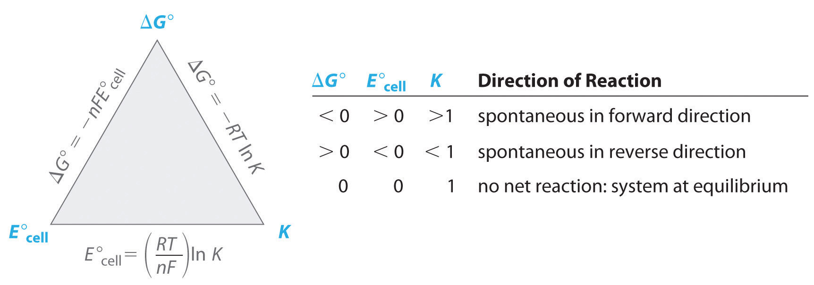The three properties of a system that can be used to predict the spontaneity of a redox reaction under standard conditions are K, ΔG°, and E°cell. If we know the value of one of these quantities, then these relationships enable us to calculate the value of the other two. The signs of ΔG° and E°cell and the magnitude of K determine the direction of spontaneous reaction under standard conditions.
Recall from Chapter 18 "Chemical Thermodynamics" that the actual free-energy change for a reaction under nonstandard conditions, ΔG, is given as follows:
Equation 19.61
ΔG = ΔG° + RT ln QWe also know that ΔG = −nFEcell and ΔG° = −nFE°cell. Substituting these expressions into Equation 19.61, we obtain
Equation 19.62
−nFEcell = −nFE°cell + RT ln QDividing both sides of this equation by −nF,
Equation 19.63
Equation 19.44 is called the Nernst equationAn equation for calculating cell potentials under nonstandard conditions; it can be used to determine the direction of spontaneous reaction for any redox reaction under an conditions: , after the German physicist and chemist Walter Nernst (1864–1941), who first derived it. The Nernst equation is arguably the most important relationship in electrochemistry. When a redox reaction is at equilibrium (ΔG = 0), Equation 19.44 reduces to Equation 19.59 because Q = K, and there is no net transfer of electrons (i.e., Ecell = 0).
Substituting the values of the constants into Equation 19.44 with T = 298 K and converting to base-10 logarithms give the relationship of the actual cell potential (Ecell), the standard cell potential (E°cell), and the reactant and product concentrations at room temperature (contained in Q):
Equation 19.64
The Nernst equation can be used to determine the value of Ecell, and thus the direction of spontaneous reaction, for any redox reaction under any conditions.
Equation 19.64 allows us to calculate the potential associated with any electrochemical cell at 298 K for any combination of reactant and product concentrations under any conditions. We can therefore determine the spontaneous direction of any redox reaction under any conditions, as long as we have tabulated values for the relevant standard electrode potentials. Notice in Equation 19.64 that the cell potential changes by 0.0591/n V for each 10-fold change in the value of Q because log 10 = 1.
In the exercise in Example 6, you determined that the following reaction proceeds spontaneously under standard conditions because E°cell > 0 (which you now know means that ΔG° < 0):
Calculate E for this reaction under the following nonstandard conditions and determine whether it will occur spontaneously: [Ce4+] = 0.013 M, [Ce3+] = 0.60 M, [Cl−] = 0.0030 M, = 1.0 atm, and T = 25°C.
Given: balanced redox reaction, standard cell potential, and nonstandard conditions
Asked for: cell potential
Strategy:
Determine the number of electrons transferred during the redox process. Then use the Nernst equation to find the cell potential under the nonstandard conditions.
Solution:
We can use the information given and the Nernst equation to calculate Ecell. Moreover, because the temperature is 25°C (298 K), we can use Equation 19.64 instead of 19.46. The overall reaction involves the net transfer of two electrons:
2Ce4+(aq) + 2e− → 2Ce3+(aq) 2Cl−(aq) → Cl2(g) + 2e−so n = 2. Substituting the concentrations given in the problem, the partial pressure of Cl2, and the value of E°cell into Equation 19.64,
Thus the reaction will not occur spontaneously under these conditions (because E = 0 V and ΔG = 0). The composition specified is that of an equilibrium mixture.
Exercise
In the exercise in Example 6, you determined that molecular oxygen will not oxidize MnO2 to permanganate via the reaction
Calculate Ecell for the reaction under the following nonstandard conditions and decide whether the reaction will occur spontaneously: pH 10, = 0.20 atm, [MNO4−] = 1.0 × 10−4 M, and T = 25°C.
Answer: Ecell = −0.22 V; the reaction will not occur spontaneously.
Applying the Nernst equation to a simple electrochemical cell such as the Zn/Cu cell discussed in Section 19.2 "Standard Potentials" allows us to see how the cell voltage varies as the reaction progresses and the concentrations of the dissolved ions change. Recall that the overall reaction for this cell is as follows:
Equation 19.65
The reaction quotient is therefore Q = [Zn2+]/[Cu2+]. Suppose that the cell initially contains 1.0 M Cu2+ and 1.0 × 10−6 M Zn2+. The initial voltage measured when the cell is connected can then be calculated from Equation 19.64:
Equation 19.66
Thus the initial voltage is greater than E° because Q < 1. As the reaction proceeds, [Zn2+] in the anode compartment increases as the zinc electrode dissolves, while [Cu2+] in the cathode compartment decreases as metallic copper is deposited on the electrode. During this process, the ratio Q = [Zn2+]/[Cu2+] steadily increases, and the cell voltage therefore steadily decreases. Eventually, [Zn2+] = [Cu2+], so Q = 1 and Ecell = E°cell. Beyond this point, [Zn2+] will continue to increase in the anode compartment, and [Cu2+] will continue to decrease in the cathode compartment. Thus the value of Q will increase further, leading to a further decrease in Ecell. When the concentrations in the two compartments are the opposite of the initial concentrations (i.e., 1.0 M Zn2+ and 1.0 × 10−6 M Cu2+), Q = 1.0 × 106, and the cell potential will be reduced to 0.92 V.
The variation of Ecell with log Q over this range is linear with a slope of −0.0591/n, as illustrated in Figure 19.11 "The Variation of ". As the reaction proceeds still further, Q continues to increase, and Ecell continues to decrease. If neither of the electrodes dissolves completely, thereby breaking the electrical circuit, the cell voltage will eventually reach zero. This is the situation that occurs when a battery is “dead.” The value of Q when Ecell = 0 is calculated as follows:
Equation 19.67
Figure 19.11 The Variation of Ecell with Log Q for a Zn/Cu Cell
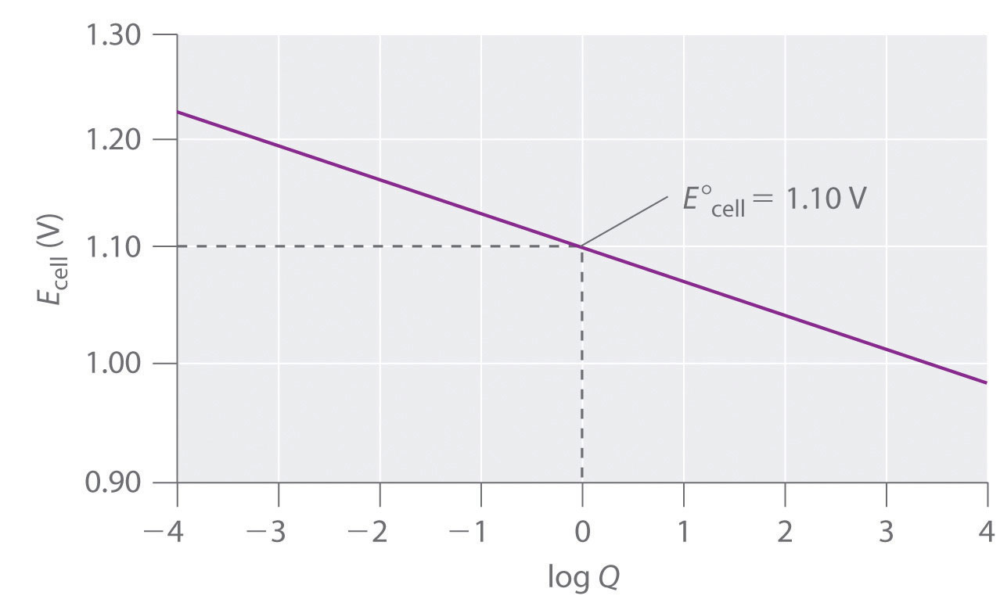Initially, log Q < 0, and the voltage of the cell is greater than E°cell. As the reaction progresses, log Q increases, and Ecell decreases. When [Zn2+] = [Cu2+], log Q = 0 and Ecell = E°cell = 1.10 V. As long as the electrical circuit remains intact, the reaction will continue, and log Q will increase until Q = K and the cell voltage reaches zero. At this point, the system will have reached equilibrium.
Recall that at equilibrium, Q = K. Thus the equilibrium constant for the reaction of Zn metal with Cu2+ to give Cu metal and Zn2+ is 1.7 × 1037 at 25°C.
A voltage can also be generated by constructing an electrochemical cell in which each compartment contains the same redox active solution but at different concentrations. The voltage is produced as the concentrations equilibrate. Suppose, for example, we have a cell with 0.010 M AgNO3 in one compartment and 1.0 M AgNO3 in the other. The cell diagram and corresponding half-reactions are as follows:
Equation 19.68
Ag(s)∣Ag+(aq, 0.010 M)∥Ag+(aq, 1.0 M)∣Ag(s)Equation 19.69
cathode: Ag+(aq, 1.0 M) + e− → Ag(s)Equation 19.70
anode: Ag(s) → Ag+(aq, 0.010 M) + e−Equation 19.71
As the reaction progresses, the concentration of Ag+ will increase in the left (oxidation) compartment as the silver electrode dissolves, while the Ag+ concentration in the right (reduction) compartment decreases as the electrode in that compartment gains mass. The total mass of Ag(s) in the cell will remain constant, however. We can calculate the potential of the cell using the Nernst equation, inserting 0 for E°cell because E°cathode = −E°anode:
An electrochemical cell of this type, in which the anode and cathode compartments are identical except for the concentration of a reactant, is called a concentration cellAn electrochemical cell in which the anode and the cathode compartments are identical except for the concentration of a reactant.. As the reaction proceeds, the difference between the concentrations of Ag+ in the two compartments will decrease, as will Ecell. Finally, when the concentration of Ag+ is the same in both compartments, equilibrium will have been reached, and the measured potential difference between the two compartments will be zero (Ecell = 0).
Calculate the voltage in a galvanic cell that contains a manganese electrode immersed in a 2.0 M solution of MnCl2 as the cathode, and a manganese electrode immersed in a 5.2 × 10−2 M solution of MnSO4 as the anode (T = 25°C).
Given: galvanic cell, identities of the electrodes, and solution concentrations
Asked for: voltage
Strategy:
A Write the overall reaction that occurs in the cell.
B Determine the number of electrons transferred. Substitute this value into the Nernst equation to calculate the voltage.
Solution:
A This is a concentration cell, in which the electrode compartments contain the same redox active substance but at different concentrations. The anions (Cl− and SO42−) do not participate in the reaction, so their identity is not important. The overall reaction is as follows:
Mn2+(aq, 2.0 M) → Mn2+(aq, 5.2 × 10−2 M)B For the reduction of Mn2+(aq) to Mn(s), n = 2. We substitute this value and the given Mn2+ concentrations into Equation 19.64:
Thus manganese will dissolve from the electrode in the compartment that contains the more dilute solution and will be deposited on the electrode in the compartment that contains the more concentrated solution.
Exercise
Suppose we construct a galvanic cell by placing two identical platinum electrodes in two beakers that are connected by a salt bridge. One beaker contains 1.0 M HCl, and the other a 0.010 M solution of Na2SO4 at pH 7.00. Both cells are in contact with the atmosphere, with = 0.20 atm. If the relevant electrochemical reaction in both compartments is the four-electron reduction of oxygen to water, O2(g) + 4H+(aq) + 4e− → 2H2O(l), what will be the potential when the circuit is closed?
Answer: 0.41 V
Because voltages are relatively easy to measure accurately using a voltmeter, electrochemical methods provide a convenient way to determine the concentrations of very dilute solutions and the solubility products (Ksp) of sparingly soluble substances. As you learned in Chapter 17 "Solubility and Complexation Equilibriums", solubility products can be very small, with values of less than or equal to 10−30. Equilibrium constants of this magnitude are virtually impossible to measure accurately by direct methods, so we must use alternative methods that are more sensitive, such as electrochemical methods.
To understand how an electrochemical cell is used to measure a solubility product, consider the cell shown in Figure 19.12 "A Galvanic Cell for Measuring the Solubility Product of AgCl", which is designed to measure the solubility product of silver chloride: Ksp = [Ag+][Cl−]. In one compartment, the cell contains a silver wire inserted into a 1.0 M solution of Ag+; the other compartment contains a silver wire inserted into a 1.0 M Cl− solution saturated with AgCl. In this system, the Ag+ ion concentration in the first compartment equals Ksp. We can see this by dividing both sides of the equation for Ksp by [Cl−] and substituting: [Ag+] = Ksp/[Cl−] = Ksp/1.0 = Ksp. The overall cell reaction is as follows:
Ag+(aq, concentrated) → Ag+(aq, dilute)Thus the voltage of the concentration cell due to the difference in [Ag+] between the two cells is as follows:
Equation 19.72
Figure 19.12 A Galvanic Cell for Measuring the Solubility Product of AgCl
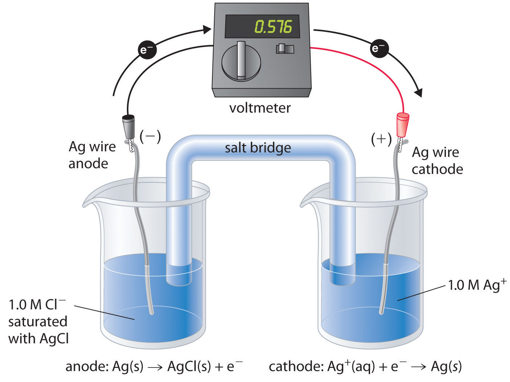One compartment contains a silver wire inserted into a 1.0 M solution of Ag+, and the other compartment contains a silver wire inserted into a 1.0 M Cl− solution saturated with AgCl. The potential due to the difference in [Ag+] between the two cells can be used to determine Ksp.
By closing the circuit, we can measure the potential caused by the difference in [Ag+] in the two cells. In this case, the experimentally measured voltage of the concentration cell at 25°C is 0.580 V. Solving Equation 19.72 for Ksp,
Equation 19.73
Thus a single potential measurement can provide the information we need to determine the value of the solubility product of a sparingly soluble salt.
To measure the solubility product of lead(II) sulfate (PbSO4) at 25°C, you construct a galvanic cell like the one shown in Figure 19.12 "A Galvanic Cell for Measuring the Solubility Product of AgCl", which contains a 1.0 M solution of a very soluble Pb2+ salt [lead(II) acetate trihydrate] in one compartment that is connected by a salt bridge to a 1.0 M solution of Na2SO4 saturated with PbSO4 in the other. You then insert a Pb electrode into each compartment and close the circuit. Your voltmeter shows a voltage of 230 mV. What is Ksp for PbSO4? Report your answer to two significant figures.
Given: galvanic cell, solution concentrations, electrodes, and voltage
Asked for: K sp
Strategy:
A From the information given, write the equation for Ksp. Express this equation in terms of the concentration of Pb2+.
B Determine the number of electrons transferred in the electrochemical reaction. Substitute the appropriate values into Equation 19.72 and solve for Ksp.
Solution:
A You have constructed a concentration cell, with one compartment containing a 1.0 M solution of Pb2+ and the other containing a dilute solution of Pb2+ in 1.0 M Na2SO4. As for any concentration cell, the voltage between the two compartments can be calculated using the Nernst equation. The first step is to relate the concentration of Pb2+ in the dilute solution to Ksp:
B The reduction of Pb2+ to Pb is a two-electron process and proceeds according to the following reaction:
Pb2+(aq, concentrated) → Pb2+(aq, dilute)so
Exercise
A concentration cell similar to the one described in Example 11 contains a 1.0 M solution of lanthanum nitrate [La(NO3)3] in one compartment and a 1.0 M solution of sodium fluoride saturated with LaF3 in the other. A metallic La strip is inserted into each compartment, and the circuit is closed. The measured potential is 0.32 V. What is the Ksp for LaF3? Report your answer to two significant figures.
Answer: 5.7 × 10−17
Another use for the Nernst equation is to calculate the concentration of a species given a measured potential and the concentrations of all the other species. We saw an example of this in Example 11, in which the experimental conditions were defined in such a way that the concentration of the metal ion was equal to Ksp. Potential measurements can be used to obtain the concentrations of dissolved species under other conditions as well, which explains the widespread use of electrochemical cells in many analytical devices. Perhaps the most common application is in the determination of [H+] using a pH meter, as illustrated in Example 12.
Suppose a galvanic cell is constructed with a standard Zn/Zn2+ couple in one compartment and a modified hydrogen electrode in the second compartment (Figure 19.7 "Determining a Standard Electrode Potential Using a Standard Hydrogen Electrode"). The pressure of hydrogen gas is 1.0 atm, but [H+] in the second compartment is unknown. The cell diagram is as follows:
Zn(s)∣Zn2+(aq, 1.0 M) ∥ H+(aq, ? M)∣H2(g, 1.0 atm)∣Pt(s)What is the pH of the solution in the second compartment if the measured potential in the cell is 0.26 V at 25°C?
Given: galvanic cell, cell diagram, and cell potential
Asked for: pH of the solution
Strategy:
A Write the overall cell reaction.
B Substitute appropriate values into the Nernst equation and solve for −log[H+] to obtain the pH.
Solution:
A Under standard conditions, the overall reaction that occurs is the reduction of protons by zinc to give H2 (note that Zn lies below H2 in Table 19.2 "Standard Potentials for Selected Reduction Half-Reactions at 25°C"):
B By substituting the given values into the simplified Nernst equation (Equation 19.64), we can calculate [H+] under nonstandard conditions:
Thus the potential of a galvanic cell can be used to measure the pH of a solution.
Exercise
Suppose you work for an environmental laboratory and you want to use an electrochemical method to measure the concentration of Pb2+ in groundwater. You construct a galvanic cell using a standard oxygen electrode in one compartment (E°cathode = 1.23 V). The other compartment contains a strip of lead in a sample of groundwater to which you have added sufficient acetic acid, a weak organic acid, to ensure electrical conductivity. The cell diagram is as follows”
Pb(s) ∣Pb2+(aq, ? M)∥H+(aq), 1.0 M∣O2(g, 1.0 atm)∣Pt(s)When the circuit is closed, the cell has a measured potential of 1.62 V. Use Table 19.3 "Comparison of Galvanic and Electrolytic Cells" and Chapter 29 "Appendix E: Standard Reduction Potentials at 25°C" to determine the concentration of Pb2+ in the groundwater.
Answer: 1.2 × 10−9 M
A coulomb (C) relates electrical potential, expressed in volts, and energy, expressed in joules. The current generated from a redox reaction is measured in amperes (A), where 1 A is defined as the flow of 1 C/s past a given point. The faraday (F) is Avogadro’s number multiplied by the charge on an electron and corresponds to the charge on 1 mol of electrons. The product of the cell potential and the total charge is the maximum amount of energy available to do work, which is related to the change in free energy that occurs during the chemical process. Adding together the ΔG values for the half-reactions gives ΔG for the overall reaction, which is proportional to both the potential and the number of electrons (n) transferred. Spontaneous redox reactions have a negative ΔG and therefore a positive Ecell. Because the equilibrium constant K is related to ΔG, E°cell and K are also related. Large equilibrium constants correspond to large positive values of E°. The Nernst equation allows us to determine the spontaneous direction of any redox reaction under any reaction conditions from values of the relevant standard electrode potentials. Concentration cells consist of anode and cathode compartments that are identical except for the concentrations of the reactant. Because ΔG = 0 at equilibrium, the measured potential of a concentration cell is zero at equilibrium (the concentrations are equal). A galvanic cell can also be used to measure the solubility product of a sparingly soluble substance and calculate the concentration of a species given a measured potential and the concentrations of all the other species.
Charge on a mole of electrons (faraday)
Equation 19.49: F ≈ 96,486 J/(V·mol)
Maximum work from an electrochemical cell
Equation 19.50: wmax = −nFEcell
Relationship between Δ G ° and Δ E °
Equation 19.52: ΔG° = −nFE°cell
Relationship between Δ G ° and K for a redox reaction
Equation 19.57: ΔG° = −RT ln K
Relationship between Δ E ° and K for a redox reaction at 25°C
Relationship between Δ G ° and Q
Equation 19.61: ΔG = ΔG° + RT ln Q
Relationship between E cell and Q at 25°C
State whether you agree or disagree with this reasoning and explain your answer: Standard electrode potentials arise from the number of electrons transferred. The greater the number of electrons transferred, the greater the measured potential difference. If 1 mol of a substance produces 0.76 V when 2 mol of electrons are transferred—as in Zn(s) → Zn2+(aq) + 2e−—then 0.5 mol of the substance will produce 0.76/2 V because only 1 mol of electrons is transferred.
What is the relationship between the measured cell potential and the total charge that passes through a cell? Which of these is dependent on concentration? Which is dependent on the identity of the oxidant or the reductant? Which is dependent on the number of electrons transferred?
In the equation wmax = −nFE°cell, which quantities are extensive properties and which are intensive properties?
For any spontaneous redox reaction, E is positive. Use thermodynamic arguments to explain why this is true.
State whether you agree or disagree with this statement and explain your answer: Electrochemical methods are especially useful in determining the reversibility or irreversibility of reactions that take place in a cell.
Although the sum of two half-reactions gives another half-reaction, the sum of the potentials of the two half-reactions cannot be used to obtain the potential of the net half-reaction. Why? When does the sum of two half-reactions correspond to the overall reaction? Why?
Occasionally, you will find high-quality electronic equipment that has its electronic components plated in gold. What is the advantage of this?
Blood analyzers, which measure pH, and are frequently used in clinical emergencies. For example, blood is measured with a pH electrode covered with a plastic membrane that is permeable to CO2. Based on your knowledge of how electrodes function, explain how such an electrode might work. Hint: CO2(g) + H2O(l) → HCO3−(aq) + H+(aq).
Concentration cells contain the same species in solution in two different compartments. Explain what produces a voltage in a concentration cell. When does V = 0 in such a cell?
Describe how an electrochemical cell can be used to measure the solubility of a sparingly soluble salt.
extensive: wmax and n; intensive: E°cell
Gold is highly resistant to corrosion because of its very positive reduction potential.
The chemical equation for the combustion of butane is as follows:
This reaction has ΔH° = −2877 kJ/mol. Calculate E°cell and then determine ΔG°. Is this a spontaneous process? What is the change in entropy that accompanies this process at 298 K?
How many electrons are transferred during the reaction Pb(s) + Hg2Cl2(s) → PbCl2(aq) + 2Hg(l)? What is the standard cell potential? Is the oxidation of Pb by Hg2Cl2 spontaneous? Calculate ΔG° for this reaction.
For the cell represented as Al(s)∣Al3+(aq)∥Sn2+(aq), Sn4+(aq)∣Pt(s), how many electrons are transferred in the redox reaction? What is the standard cell potential? Is this a spontaneous process? What is ΔG°?
Explain why the sum of the potentials for the half-reactions Sn2+(aq) + 2e− → Sn(s) and Sn4+(aq) + 2e− → Sn2+(aq) does not equal the potential for the reaction Sn4+(aq) + 4e− → Sn(s). What is the net cell potential? Compare the values of ΔG° for the sum of the potentials and the actual net cell potential.
Based on Table 19.2 "Standard Potentials for Selected Reduction Half-Reactions at 25°C" and Chapter 29 "Appendix E: Standard Reduction Potentials at 25°C", do you agree with the proposed potentials for the following half-reactions? Why or why not?
For each reaction, calculate E°cell and then determine ΔG°. Indicate whether each reaction is spontaneous.
What is the standard change in free energy for the reaction between Ca2+ and Na(s) to give Ca(s) and Na+? Do the sign and magnitude of ΔG° agree with what you would expect based on the positions of these elements in the periodic table? Why or why not?
In acidic solution, permanganate (MnO4−) oxidizes Cl− to chlorine gas, and MnO4− is reduced to Mn2+(aq).
Potentiometric titrations are an efficient method for determining the endpoint of a redox titration. In such a titration, the potential of the solution is monitored as measured volumes of an oxidant or a reductant are added. Data for a typical titration, the potentiometric titration of Fe(II) with a 0.1 M solution of Ce(IV), are given in the following table. The starting potential has been arbitrarily set equal to zero because it is the change in potential with the addition of the oxidant that is important.
| Titrant (mL) | E (mV) |
|---|---|
| 2.00 | 50 |
| 6.00 | 100 |
| 9.00 | 255 |
| 10.00 | 960 |
| 11.00 | 1325 |
| 12.00 | 1625 |
| 14.00 | 1875 |
The standard electrode potential (E°) for the half-reaction Ni2+(aq) + 2e− → Ni(s) is −0.257 V. What pH is needed for this reaction to take place in the presence of 1.00 atm H2(g) as the reductant if [Ni2+] is 1.00 M?
The reduction of Mn(VII) to Mn(s) by H2(g) proceeds in five steps that can be readily followed by changes in the color of the solution. Here is the redox chemistry:
Mn(III) can disproportionate (both oxidize and reduce itself) by means of the following half-reactions:
For the reduction of oxygen to water, E° = 1.23 V. What is the potential for this half-reaction at pH 7.00? What is the potential in a 0.85 M solution of NaOH?
The biological molecule abbreviated as NADH (reduced nicotinamide adenine dinucleotide) can be formed by reduction of NAD+ (nicotinamide adenine dinucleotide) via the half-reaction NAD+ + H+ + 2e− → NADH; E° = −0.32 V.
Given the following biologically relevant half-reactions, will FAD (flavin adenine dinucleotide), a molecule used to transfer electrons whose reduced form is FADH2, be an effective oxidant for the conversion of acetaldehyde to acetate at pH 4.00?
Ideally, any half-reaction with E° > 1.23 V will oxidize water as a result of the half-reaction O2(g) + 4H+(aq) + 4e− → 2H2O(l).
Under acidic conditions, ideally any half-reaction with E° > 1.23 V will oxidize water via the reaction O2(g) + 4H+(aq) + 4e− → 2H2O(l).
Complexing agents can bind to metals and result in the net stabilization of the complexed species. What is the net thermodynamic stabilization energy that results from using CN− as a complexing agent for Mn3+/Mn2+?
You have constructed a cell with zinc and lead amalgam electrodes described by the cell diagram Zn(Hg)(s)∣Zn(NO3)2(aq)∥Pb(NO3)2(aq)∣Pb(Hg)(s). If you vary the concentration of Zn(NO3)2 and measure the potential at different concentrations, you obtain the following data:
| Zn(NO3)2 (M) | Ecell (V) |
|---|---|
| 0.0005 | 0.7398 |
| 0.002 | 0.7221 |
| 0.01 | 0.7014 |
Hydrogen gas reduces Ni2+ according to the following reaction: Ni2+(aq) + H2(g) → Ni(s) + 2H+(aq); E°cell = −0.25 V; ΔH = 54 kJ/mol.
The silver–silver bromide electrode has a standard potential of 0.07133 V. What is Ksp of AgBr?
6e−; E°cell = 1.813 V; the reaction is spontaneous; ΔG° = −525 kJ/mol Al.
yes; E° = 0.40 V
Because galvanic cells can be self-contained and portable, they can be used as batteries and fuel cells. A battery (storage cell)A galvanic cell (or series of galvanic cells) that contains all the reactants needed to produce electricity. is a galvanic cell (or a series of galvanic cells) that contains all the reactants needed to produce electricity. In contrast, a fuel cellA galvanic cell that requires a constant external supply of one or more reactants to generate electricity. is a galvanic cell that requires a constant external supply of one or more reactants to generate electricity. In this section, we describe the chemistry behind some of the more common types of batteries and fuel cells.
There are two basic kinds of batteries: disposable, or primary, batteries, in which the electrode reactions are effectively irreversible and which cannot be recharged; and rechargeable, or secondary, batteries, which form an insoluble product that adheres to the electrodes. These batteries can be recharged by applying an electrical potential in the reverse direction. The recharging process temporarily converts a rechargeable battery from a galvanic cell to an electrolytic cell.
Batteries are cleverly engineered devices that are based on the same fundamental laws as galvanic cells. The major difference between batteries and the galvanic cells we have previously described is that commercial batteries use solids or pastes rather than solutions as reactants to maximize the electrical output per unit mass. The use of highly concentrated or solid reactants has another beneficial effect: the concentrations of the reactants and the products do not change greatly as the battery is discharged; consequently, the output voltage remains remarkably constant during the discharge process. This behavior is in contrast to that of the Zn/Cu cell, whose output decreases logarithmically as the reaction proceeds (Figure 19.11 "The Variation of "). When a battery consists of more than one galvanic cell, the cells are usually connected in series—that is, with the positive (+) terminal of one cell connected to the negative (−) terminal of the next, and so forth. The overall voltage of the battery is therefore the sum of the voltages of the individual cells.
The dry cell, by far the most common type of battery, is used in flashlights, electronic devices such as the Walkman and Game Boy, and many other devices. Although the dry cell was patented in 1866 by the French chemist Georges Leclanché and more than 5 billion such cells are sold every year, the details of its electrode chemistry are still not completely understood. In spite of its name, the Leclanché dry cellA battery consisting of an electrolyte that is an acidic water-based paste containing graphite, and starch. is actually a “wet cell”: the electrolyte is an acidic water-based paste containing MnO2, NH4Cl, ZnCl2, graphite, and starch (part (a) in Figure 19.13 "Three Kinds of Primary (Nonrechargeable) Batteries"). The half-reactions at the anode and the cathode can be summarized as follows:
Equation 19.74
cathode: 2MnO2(s) + 2NH4+(aq) + 2e− → Mn2O3(s) + 2NH3(aq) + H2O(l)Equation 19.75
anode: Zn(s) → Zn2+(aq) + 2e−The Zn2+ ions formed by the oxidation of Zn(s) at the anode react with NH3 formed at the cathode and Cl− ions present in solution, so the overall cell reaction is as follows:
Equation 19.76
overall: 2MnO2(s) + 2NH4Cl(aq) + Zn(s) → Mn2O3(s) + Zn(NH3)2Cl2(s) + H2O(l)The dry cell produces about 1.55 V and is inexpensive to manufacture. It is not, however, very efficient in producing electrical energy because only the relatively small fraction of the MnO2 that is near the cathode is actually reduced and only a small fraction of the zinc cathode is actually consumed as the cell discharges. In addition, dry cells have a limited shelf life because the Zn anode reacts spontaneously with NH4Cl in the electrolyte, causing the case to corrode and allowing the contents to leak out.
The alkaline batteryA battery that consists of a Leclanché cell adapted to operate under alkaline (basic) conditions. is essentially a Leclanché cell adapted to operate under alkaline, or basic, conditions. The half-reactions that occur in an alkaline battery are as follows:
Equation 19.77
cathode: 2MnO2(s) + H2O(l) + 2e− → Mn2O3(s) + 2OH−(aq)Equation 19.78
anode: Zn(s) + 2OH−(aq) → ZnO(s) + H2O(l) + 2e−Equation 19.79
This battery also produces about 1.5 V, but it has a longer shelf life and more constant output voltage as the cell is discharged than the Leclanché dry cell. Although the alkaline battery is more expensive to produce than the Leclanché dry cell, the improved performance makes this battery more cost-effective.
Although some of the small button batteries used to power watches, calculators, and cameras are miniature alkaline cells, most are based on a completely different chemistry. In these batteries, the anode is a zinc–mercury amalgam rather than pure zinc, and the cathode uses either HgO or Ag2O as the oxidant rather than MnO2 (part (b) in Figure 19.13 "Three Kinds of Primary (Nonrechargeable) Batteries"). The cathode and overall reactions and cell output for these two types of button batteries are as follows:
Equation 19.80
cathode (Hg): HgO(s) + H2O(l) + 2e− → Hg(l) + 2OH−(aq)Equation 19.81
Equation 19.82
cathode (Ag): Ag2O(s) + H2O(l) + 2e− → 2Ag(s) + 2OH−(aq)Equation 19.83
The major advantages of the mercury and silver cells are their reliability and their high output-to-mass ratio. These factors make them ideal for applications where small size is crucial, as in cameras and hearing aids. The disadvantages are the expense and the environmental problems caused by the disposal of heavy metals, such as Hg and Ag.
None of the batteries described above is actually “dry.” They all contain small amounts of liquid water, which adds significant mass and causes potential corrosion problems. Consequently, substantial effort has been expended to develop water-free batteries.
One of the few commercially successful water-free batteries is the lithium–iodine batteryA battery that consists of an anode of lithium metal and a cathode containing a solid complex of with a layer of solid LiI in between that allows the diffusion of ions.. The anode is lithium metal, and the cathode is a solid complex of I2. Separating them is a layer of solid LiI, which acts as the electrolyte by allowing the diffusion of Li+ ions. The electrode reactions are as follows:
Equation 19.84
cathode: I2(s) + 2e− → 2I−(LiI)Equation 19.85
anode: 2Li(s) → 2Li+(LiI) + 2e−Equation 19.86
Cardiac pacemaker. An x-ray of a patient showing the location and size of a pacemaker powered by a lithium–iodine battery.
As shown in part (c) in Figure 19.13 "Three Kinds of Primary (Nonrechargeable) Batteries", a typical lithium–iodine battery consists of two cells separated by a nickel metal mesh that collects charge from the anode. Because of the high internal resistance caused by the solid electrolyte, only a low current can be drawn. Nonetheless, such batteries have proven to be long-lived (up to 10 yr) and reliable. They are therefore used in applications where frequent replacement is difficult or undesirable, such as in cardiac pacemakers and other medical implants and in computers for memory protection. These batteries are also used in security transmitters and smoke alarms. Other batteries based on lithium anodes and solid electrolytes are under development, using TiS2, for example, for the cathode.
Figure 19.13 Three Kinds of Primary (Nonrechargeable) Batteries
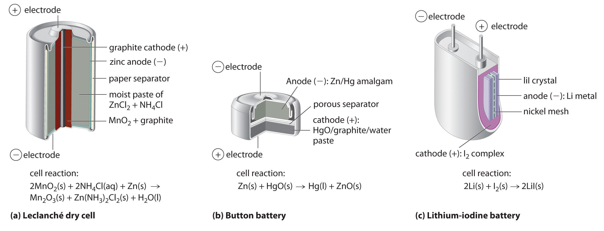(a) A Leclanché dry cell is actually a “wet cell,” in which the electrolyte is an acidic water-based paste containing MnO2, NH4Cl, ZnCl2, graphite, and starch. Though inexpensive to manufacture, the cell is not very efficient in producing electrical energy and has a limited shelf life. (b) In a button battery, the anode is a zinc–mercury amalgam, and the cathode can be either HgO (shown here) or Ag2O as the oxidant. Button batteries are reliable and have a high output-to-mass ratio, which allows them to be used in applications such as calculators and watches, where their small size is crucial. (c) A lithium–iodine battery consists of two cells separated by a metallic nickel mesh that collects charge from the anodes. The anode is lithium metal, and the cathode is a solid complex of I2. The electrolyte is a layer of solid LiI that allows Li+ ions to diffuse from the cathode to the anode. Although this type of battery produces only a relatively small current, it is highly reliable and long-lived.
Dry cells, button batteries, and lithium–iodine batteries are disposable and cannot be recharged once they are discharged. Rechargeable batteries, in contrast, offer significant economic and environmental advantages because they can be recharged and discharged numerous times. As a result, manufacturing and disposal costs drop dramatically for a given number of hours of battery usage. Two common rechargeable batteries are the nickel–cadmium battery and the lead–acid battery, which we describe next.
The nickel–cadmiumA type of battery that consists of a water-based cell with a cadmium anode and a highly oxidized nickel cathode., or NiCad, battery is used in small electrical appliances and devices like drills, portable vacuum cleaners, and AM/FM digital tuners. It is a water-based cell with a cadmium anode and a highly oxidized nickel cathode that is usually described as the nickel(III) oxo-hydroxide, NiO(OH). As shown in Figure 19.14 "The Nickel–Cadmium (NiCad) Battery, a Rechargeable Battery", the design maximizes the surface area of the electrodes and minimizes the distance between them, which decreases internal resistance and makes a rather high discharge current possible.
Figure 19.14 The Nickel–Cadmium (NiCad) Battery, a Rechargeable Battery
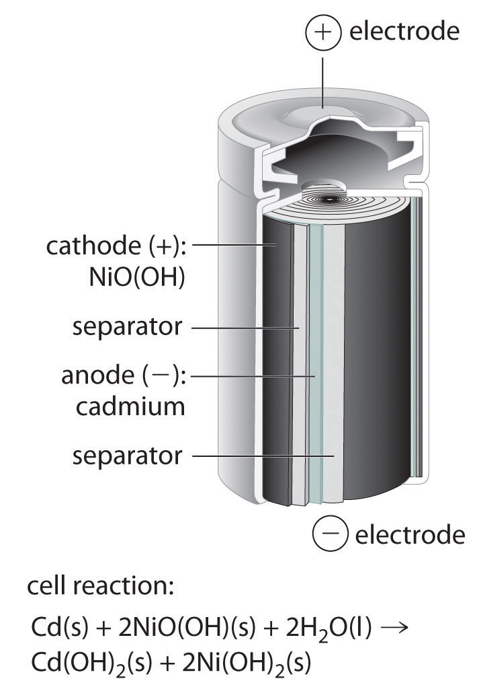NiCad batteries contain a cadmium anode and a highly oxidized nickel cathode. This design maximizes the surface area of the electrodes and minimizes the distance between them, which gives the battery both a high discharge current and a high capacity.
The electrode reactions during the discharge of a NiCad battery are as follows:
Equation 19.87
cathode: 2NiO(OH)(s) + 2H2O(l) + 2e− → 2Ni(OH)2(s) + 2OH−(aq)Equation 19.88
anode: Cd(s) + 2OH−(aq) → Cd(OH)2(s) + 2e−Equation 19.89
Because the products of the discharge half-reactions are solids that adhere to the electrodes [Cd(OH)2 and 2Ni(OH)2], the overall reaction is readily reversed when the cell is recharged. Although NiCad cells are lightweight, rechargeable, and high capacity, they have certain disadvantages. For example, they tend to lose capacity quickly if not allowed to discharge fully before recharging, they do not store well for long periods when fully charged, and they present significant environmental and disposal problems because of the toxicity of cadmium.
A variation on the NiCad battery is the nickel–metal hydride battery (NiMH) used in hybrid automobiles, wireless communication devices, and mobile computing. The overall chemical equation for this type of battery is as follows:
NiO(OH)(s) + MH → Ni(OH)2(s) + M(s)The NiMH battery has a 30%–40% improvement in capacity over the NiCad battery; it is more environmentally friendly so storage, transportation, and disposal are not subject to environmental control; and it is not as sensitive to recharging memory. It is, however, subject to a 50% greater self-discharge rate, a limited service life, and higher maintenance, and it is more expensive than the NiCad battery.
The lead–acid batteryA battery consisting of a plate or grid of spongy lead metal, a cathode containing powdered and an electrolyte that is usually an aqueous solution of is used to provide the starting power in virtually every automobile and marine engine on the market. Marine and car batteries typically consist of multiple cells connected in series. The total voltage generated by the battery is the potential per cell (E°cell) times the number of cells. As shown in Figure 19.15 "One Cell of a Lead–Acid Battery", the anode of each cell in a lead storage battery is a plate or grid of spongy lead metal, and the cathode is a similar grid containing powdered lead dioxide (PbO2). The electrolyte is usually an approximately 37% solution (by mass) of sulfuric acid in water, with a density of 1.28 g/mL (about 4.5 M H2SO4). Because the redox active species are solids, there is no need to separate the electrodes. The electrode reactions in each cell during discharge are as follows:
Equation 19.90
Equation 19.91
Equation 19.92
Figure 19.15 One Cell of a Lead–Acid Battery
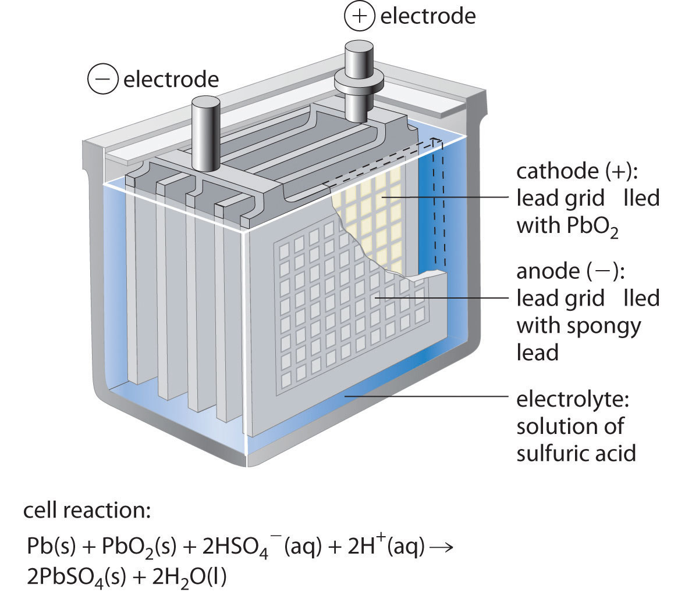The anodes in each cell of a rechargeable battery are plates or grids of lead containing spongy lead metal, while the cathodes are similar grids containing powdered lead dioxide (PbO2). The electrolyte is an aqueous solution of sulfuric acid. The value of E° for such a cell is about 2 V. Connecting three such cells in series produces a 6 V battery, whereas a typical 12 V car battery contains six cells in series. When treated properly, this type of high-capacity battery can be discharged and recharged many times over.
As the cell is discharged, a powder of PbSO4 forms on the electrodes. Moreover, sulfuric acid is consumed and water is produced, decreasing the density of the electrolyte and providing a convenient way of monitoring the status of a battery by simply measuring the density of the electrolyte.
Source: Photo courtesy of Mitchclanky2008, http://www.flickr.com/photos/25597837@N05/2422765479/.
When an external voltage in excess of 2.04 V per cell is applied to a lead–acid battery, the electrode reactions reverse, and PbSO4 is converted back to metallic lead and PbO2. If the battery is recharged too vigorously, however, electrolysis of water can occur, resulting in the evolution of potentially explosive hydrogen gas. (For more information on electrolysis, see Section 19.7 "Electrolysis".) The gas bubbles formed in this way can dislodge some of the PbSO4 or PbO2 particles from the grids, allowing them to fall to the bottom of the cell, where they can build up and cause an internal short circuit. Thus the recharging process must be carefully monitored to optimize the life of the battery. With proper care, however, a lead–acid battery can be discharged and recharged thousands of times. In automobiles, the alternator supplies the electric current that causes the discharge reaction to reverse.
A fuel cell is a galvanic cell that requires a constant external supply of reactants because the products of the reaction are continuously removed. Unlike a battery, it does not store chemical or electrical energy; a fuel cell allows electrical energy to be extracted directly from a chemical reaction. In principle, this should be a more efficient process than, for example, burning the fuel to drive an internal combustion engine that turns a generator, which is typically less than 40% efficient, and in fact, the efficiency of a fuel cell is generally between 40% and 60%. Unfortunately, significant cost and reliability problems have hindered the wide-scale adoption of fuel cells. In practice, their use has been restricted to applications in which mass may be a significant cost factor, such as US manned space vehicles.
These space vehicles use a hydrogen/oxygen fuel cell that requires a continuous input of H2(g) and O2(g), as illustrated in Figure 19.16 "A Hydrogen Fuel Cell Produces Electrical Energy Directly from a Chemical Reaction". The electrode reactions are as follows:
Equation 19.93
cathode: O2(g) + 4H+ + 4e− → 2H2O(g)Equation 19.94
anode: 2H2(g) → 4H+ + 4e−Equation 19.95
Figure 19.16 A Hydrogen Fuel Cell Produces Electrical Energy Directly from a Chemical Reaction
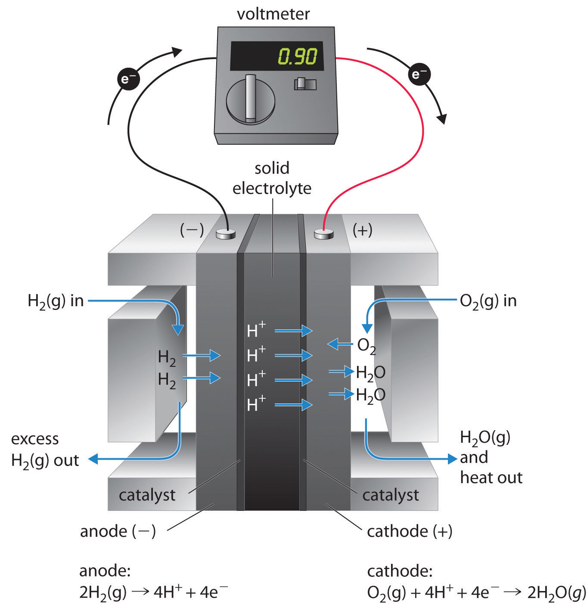Hydrogen is oxidized to protons at the anode, and the electrons are transferred through an external circuit to the cathode, where oxygen is reduced and combines with H+ to form water. A solid electrolyte allows the protons to diffuse from the anode to the cathode. Although fuel cells are an essentially pollution-free means of obtaining electrical energy, their expense and technological complexity have thus far limited their applications.
The overall reaction represents an essentially pollution-free conversion of hydrogen and oxygen to water, which in space vehicles is then collected and used. Although this type of fuel cell should produce 1.23 V under standard conditions, in practice the device achieves only about 0.9 V. One of the major barriers to achieving greater efficiency is the fact that the four-electron reduction of O2(g) at the cathode is intrinsically rather slow, which limits current that can be achieved. All major automobile manufacturers have major research programs involving fuel cells: one of the most important goals is the development of a better catalyst for the reduction of O2.
A battery is a contained unit that produces electricity, whereas a fuel cell is a galvanic cell that requires a constant external supply of one or more reactants to generate electricity. One type of battery is the Leclanché dry cell, which contains an electrolyte in an acidic water-based paste. This battery is called an alkaline battery when adapted to operate under alkaline conditions. Button batteries have a high output-to-mass ratio; lithium–iodine batteries consist of a solid electrolyte; the nickel–cadmium (NiCad) battery is rechargeable; and the lead–acid battery, which is also rechargeable, does not require the electrodes to be in separate compartments. A fuel cell requires an external supply of reactants as the products of the reaction are continuously removed. In a fuel cell, energy is not stored; electrical energy is provided by a chemical reaction.
What advantage is there to using an alkaline battery rather than a Leclanché dry cell?
Why does the density of the fluid in lead–acid batteries drop when the battery is discharged?
What type of battery would you use for each application and why?
Why are galvanic cells used as batteries and fuel cells? What is the difference between a battery and a fuel cell? What is the advantage to using highly concentrated or solid reactants in a battery?
This reaction is characteristic of a lead storage battery:
Pb(s) + PbO2(s) + 2H2SO4(aq) → 2PbSO4(s) + 2H2O(l)If you have a battery with an electrolyte that has a density of 1.15 g/cm3 and contains 30.0% sulfuric acid by mass, is the potential greater than or less than that of the standard cell?
[H2SO4] = 3.52 M; E > E°
CorrosionA galvanic process by which metals deteriorate through oxidation—usually but not always to their oxides. is a galvanic process by which metals deteriorate through oxidation—usually but not always to their oxides. For example, when exposed to air, iron rusts, silver tarnishes, and copper and brass acquire a bluish-green surface called a patina. Of the various metals subject to corrosion, iron is by far the most important commercially. An estimated $100 billion per year is spent in the United States alone to replace iron-containing objects destroyed by corrosion. Consequently, the development of methods for protecting metal surfaces from corrosion constitutes a very active area of industrial research. In this section, we describe some of the chemical and electrochemical processes responsible for corrosion. We also examine the chemical basis for some common methods for preventing corrosion and treating corroded metals.
Corrosion is a galvanic process.
Under ambient conditions, the oxidation of most metals is thermodynamically spontaneous, with the notable exception of gold and platinum. Hence it is actually somewhat surprising that any metals are useful at all in Earth’s moist, oxygen-rich atmosphere. Some metals, however, are resistant to corrosion for kinetic reasons. For example, aluminum in soft-drink cans and airplanes is protected by a thin coating of metal oxide that forms on the surface of the metal and acts as an impenetrable barrier that prevents further destruction. Aluminum cans also have a thin plastic layer to prevent reaction of the oxide with acid in the soft drink. Chromium, magnesium, and nickel also form protective oxide films. Stainless steels are remarkably resistant to corrosion because they usually contain a significant proportion of chromium, nickel, or both.
In contrast to these metals, when iron corrodes, it forms a red-brown hydrated metal oxide (Fe2O3·xH2O), commonly known as rust, that does not provide a tight protective film (Figure 19.17 "Rust, the Result of Corrosion of Metallic Iron"). Instead, the rust continually flakes off to expose a fresh metal surface vulnerable to reaction with oxygen and water. Because both oxygen and water are required for rust to form, an iron nail immersed in deoxygenated water will not rust—even over a period of several weeks. Similarly, a nail immersed in an organic solvent such as kerosene or mineral oil saturated with oxygen will not rust because of the absence of water.
Figure 19.17 Rust, the Result of Corrosion of Metallic Iron

Iron is oxidized to Fe2+(aq) at an anodic site on the surface of the iron, which is often an impurity or a lattice defect. Oxygen is reduced to water at a different site on the surface of the iron, which acts as the cathode. Electrons are transferred from the anode to the cathode through the electrically conductive metal. Water is a solvent for the Fe2+ that is produced initially and acts as a salt bridge. Rust (Fe2O3·xH2O) is formed by the subsequent oxidation of Fe2+ by atmospheric oxygen.
In the corrosion process, iron metal acts as the anode in a galvanic cell and is oxidized to Fe2+; oxygen is reduced to water at the cathode. The relevant reactions are as follows:
Equation 19.96
Equation 19.97
Equation 19.98
The Fe2+ ions produced in the initial reaction are then oxidized by atmospheric oxygen to produce the insoluble hydrated oxide containing Fe3+, as represented in the following equation:
Equation 19.99
4Fe2+(aq) + O2(g) + (2 + 4x)H2O → 2Fe2O3·xH2O + 4H+(aq)The sign and magnitude of E° for the corrosion process (Equation 19.98) indicate that there is a strong driving force for the oxidation of iron by O2 under standard conditions (1 M H+). Under neutral conditions, the driving force is somewhat less but still appreciable (E = 1.25 V at pH 7.0). Normally, the reaction of atmospheric CO2 with water to form H+ and HCO3− provides a low enough pH to enhance the reaction rate, as does acid rain. (For more information on acid rain, see Chapter 4 "Reactions in Aqueous Solution", Section 4.7 "The Chemistry of Acid Rain".) Automobile manufacturers spend a great deal of time and money developing paints that adhere tightly to the car’s metal surface to prevent oxygenated water, acid, and salt from coming into contact with the underlying metal. Unfortunately, even the best paint is subject to scratching or denting, and the electrochemical nature of the corrosion process means that two scratches relatively remote from each other can operate together as anode and cathode, leading to sudden mechanical failure (Figure 19.18 "Small Scratches in a Protective Paint Coating Can Lead to the Rapid Corrosion of Iron").
Figure 19.18 Small Scratches in a Protective Paint Coating Can Lead to the Rapid Corrosion of Iron

Holes in a protective coating allow oxygen to be reduced at the surface with the greater exposure to air (the cathode), while metallic iron is oxidized to Fe2+(aq) at the less exposed site (the anode). Rust is formed when Fe2+(aq) diffuses to a location where it can react with atmospheric oxygen, which is often remote from the anode. The electrochemical interaction between cathodic and anodic sites can cause a large pit to form under a painted surface, eventually resulting in sudden failure with little visible warning that corrosion has occurred.
One of the most common techniques used to prevent the corrosion of iron is applying a protective coating of another metal that is more difficult to oxidize. Faucets and some external parts of automobiles, for example, are often coated with a thin layer of chromium using an electrolytic process that will be discussed in Section 19.7 "Electrolysis". With the increased use of polymeric materials in cars, however, the use of chrome-plated steel has diminished in recent years. Similarly, the “tin cans” that hold soups and other foods are actually made of steel coated with a thin layer of tin. Neither chromium nor tin is intrinsically resistant to corrosion, but both form protective oxide coatings.
As with a protective paint, scratching a protective metal coating will allow corrosion to occur. In this case, however, the presence of the second metal can actually increase the rate of corrosion. The values of the standard electrode potentials for Sn2+ (E° = −0.14 V) and Fe2+ (E° = −0.45 V) in Table 19.2 "Standard Potentials for Selected Reduction Half-Reactions at 25°C" show that Fe is more easily oxidized than Sn. As a result, the more corrosion-resistant metal (in this case, tin) accelerates the corrosion of iron by acting as the cathode and providing a large surface area for the reduction of oxygen (Figure 19.19 "Galvanic Corrosion"). This process is seen in some older homes where copper and iron pipes have been directly connected to each other. The less easily oxidized copper acts as the cathode, causing iron to dissolve rapidly near the connection and occasionally resulting in a catastrophic plumbing failure.
Figure 19.19 Galvanic Corrosion

If iron is in contact with a more corrosion-resistant metal such as tin, copper, or lead, the other metal can act as a large cathode that greatly increases the rate of reduction of oxygen. Because the reduction of oxygen is coupled to the oxidation of iron, this can result in a dramatic increase in the rate at which iron is oxidized at the anode. Galvanic corrosion is likely to occur whenever two dissimilar metals are connected directly, allowing electrons to be transferred from one to the other.
One way to avoid these problems is to use a more easily oxidized metal to protect iron from corrosion. In this approach, called cathodic protection, a more reactive metal such as Zn (E° = −0.76 V for Zn2+ + 2e− → Zn) becomes the anode, and iron becomes the cathode. This prevents oxidation of the iron and protects the iron object from corrosion. The reactions that occur under these conditions are as follows:
Equation 19.100
cathode: O2(g) + 4e− + 4H+(aq) → 2H2O(l)Equation 19.101
anode: Zn(s) → Zn2+(aq) + 2e−Equation 19.102
The more reactive metal reacts with oxygen and will eventually dissolve, “sacrificing” itself to protect the iron object. Cathodic protection is the principle underlying galvanized steel, which is steel protected by a thin layer of zinc. Galvanized steel is used in objects ranging from nails to garbage cans. In a similar strategy, sacrificial electrodesAn electrode containing a more reactive metal that is attached to a metal object to inhibit that object’s corrosion. using magnesium, for example, are used to protect underground tanks or pipes (Figure 19.20 "The Use of a Sacrificial Electrode to Protect Against Corrosion"). Replacing the sacrificial electrodes is more cost-effective than replacing the iron objects they are protecting.
Figure 19.20 The Use of a Sacrificial Electrode to Protect Against Corrosion

Connecting a magnesium rod to an underground steel pipeline protects the pipeline from corrosion. Because magnesium (E° = −2.37 V) is much more easily oxidized than iron (E° = −0.45 V), the Mg rod acts as the anode in a galvanic cell. The pipeline is therefore forced to act as the cathode at which oxygen is reduced. The soil between the anode and the cathode acts as a salt bridge that completes the electrical circuit and maintains electrical neutrality. As Mg(s) is oxidized to Mg2+ at the anode, anions in the soil, such as nitrate, diffuse toward the anode to neutralize the positive charge. Simultaneously, cations in the soil, such as H+ or NH4+, diffuse toward the cathode, where they replenish the protons that are consumed as oxygen is reduced. A similar strategy uses many miles of somewhat less reactive zinc wire to protect the Alaska oil pipeline.
Suppose an old wooden sailboat, held together with iron screws, has a bronze propeller (recall that bronze is an alloy of copper containing about 7%–10% tin).
Given: identity of metals
Asked for: corrosion reaction, E°cell, and preventive measures
Strategy:
A Write the reactions that occur at the anode and the cathode. From these, write the overall cell reaction and calculate E°cell.
B Based on the relative redox activity of various substances, suggest possible preventive measures.
Solution:
A According to Table 19.2 "Standard Potentials for Selected Reduction Half-Reactions at 25°C", both copper and tin are less active metals than iron (i.e., they have higher positive values of E° than iron). Thus if tin or copper is brought into electrical contact by seawater with iron in the presence of oxygen, corrosion will occur. We therefore anticipate that the bronze propeller will act as the cathode at which O2 is reduced, and the iron screws will act as anodes at which iron dissolves:
Over time, the iron screws will dissolve, and the boat will fall apart.
Exercise
Suppose the water pipes leading into your house are made of lead, while the rest of the plumbing in your house is iron. To eliminate the possibility of lead poisoning, you call a plumber to replace the lead pipes. He quotes you a very low price if he can use up his existing supply of copper pipe to do the job.
Answer:
The deterioration of metals through oxidation is a galvanic process called corrosion. Protective coatings consist of a second metal that is more difficult to oxidize than the metal being protected. Alternatively, a more easily oxidized metal can be applied to a metal surface, thus providing cathodic protection of the surface. A thin layer of zinc protects galvanized steel. Sacrificial electrodes can also be attached to an object to protect it.
Do you expect a bent nail to corrode more or less rapidly than a straight nail? Why?
What does it mean when a metal is described as being coated with a sacrificial layer? Is this different from galvanic protection?
Why is it important for automobile manufacturers to apply paint to the metal surface of a car? Why is this process particularly important for vehicles in northern climates, where salt is used on icy roads?
Paint keeps oxygen and water from coming into direct contact with the metal, which prevents corrosion. Paint is more necessary because salt is an electrolyte that increases the conductivity of water and facilitates the flow of electric current between anodic and cathodic sites.
In this chapter, we have described various galvanic cells in which a spontaneous chemical reaction is used to generate electrical energy. In an electrolytic cell, however, the opposite process, called electrolysisAn electrochemical process in which an external voltage is applied to an electrolytic cell to drive a nonspontaneous reaction., occurs: an external voltage is applied to drive a nonspontaneous reaction (Figure 19.1 "Electrochemical Cells"). In this section, we look at how electrolytic cells are constructed and explore some of their many commercial applications.
In an electrolytic cell, an external voltage is applied to drive a nonspontaneous reaction.
If we construct an electrochemical cell in which one electrode is copper metal immersed in a 1 M Cu2+ solution and the other electrode is cadmium metal immersed in a 1 M Cd2+ solution and then close the circuit, the potential difference between the two compartments will be 0.74 V. The cadmium electrode will begin to dissolve (Cd is oxidized to Cd2+) and is the anode, while metallic copper will be deposited on the copper electrode (Cu2+ is reduced to Cu), which is the cathode (part (a) in Figure 19.21 "An Applied Voltage Can Reverse the Flow of Electrons in a Galvanic Cd/Cu Cell"). The overall reaction is as follows:
Equation 19.103
This reaction is thermodynamically spontaneous as written (ΔG° < 0):
Equation 19.104
In this direction, the system is acting as a galvanic cell.
Figure 19.21 An Applied Voltage Can Reverse the Flow of Electrons in a Galvanic Cd/Cu Cell

(a) When compartments that contain a Cd electrode immersed in 1 M Cd2+(aq) and a Cu electrode immersed in 1 M Cu2+(aq) are connected to create a galvanic cell, Cd(s) is spontaneously oxidized to Cd2+(aq) at the anode, and Cu2+(aq) is spontaneously reduced to Cu(s) at the cathode. The potential of the galvanic cell is 0.74 V. (b) Applying an external potential greater than 0.74 V in the reverse direction forces electrons to flow from the Cu electrode [which is now the anode, at which metallic Cu(s) is oxidized to Cu2+(aq)] and into the Cd electrode [which is now the cathode, at which Cd2+(aq) is reduced to Cd(s)]. The anode in an electrolytic cell is positive because electrons are flowing from it, whereas the cathode is negative because electrons are flowing into it.
The reverse reaction, the reduction of Cd2+ by Cu, is thermodynamically nonspontaneous and will occur only with an input of 140 kJ. We can force the reaction to proceed in the reverse direction by applying an electrical potential greater than 0.74 V from an external power supply. The applied voltage forces electrons through the circuit in the reverse direction, converting a galvanic cell to an electrolytic cell. Thus the copper electrode is now the anode (Cu is oxidized), and the cadmium electrode is now the cathode (Cd2+ is reduced) (part (b) in Figure 19.21 "An Applied Voltage Can Reverse the Flow of Electrons in a Galvanic Cd/Cu Cell"). The signs of the cathode and the anode have switched to reflect the flow of electrons in the circuit. The half-reactions that occur at the cathode and the anode are as follows:
Equation 19.105
Equation 19.106
Equation 19.107
Because E°cell < 0, the overall reaction—the reduction of Cd2+ by Cu—clearly cannot occur spontaneously and proceeds only when sufficient electrical energy is applied. The differences between galvanic and electrolytic cells are summarized in Table 19.3 "Comparison of Galvanic and Electrolytic Cells".
Table 19.3 Comparison of Galvanic and Electrolytic Cells
| Property | Galvanic Cell | Electrolytic Cell |
|---|---|---|
| ΔG | < 0 | > 0 |
| E cell | > 0 | < 0 |
| Electrode Process | ||
| anode | oxidation | oxidation |
| cathode | reduction | reduction |
| Sign of Electrode | ||
| anode | − | + |
| cathode | + | − |
At sufficiently high temperatures, ionic solids melt to form liquids that conduct electricity extremely well due to the high concentrations of ions. If two inert electrodes are inserted into molten NaCl, for example, and an electrical potential is applied, Cl− is oxidized at the anode, and Na+ is reduced at the cathode. The overall reaction is as follows:
Equation 19.108
2NaCl(l) → 2Na(l) + Cl2(g)This is the reverse of the formation of NaCl from its elements. The product of the reduction reaction is liquid sodium because the melting point of sodium metal is 97.8°C, well below that of NaCl (801°C). Approximately 20,000 tons of sodium metal are produced commercially in the United States each year by the electrolysis of molten NaCl in a Downs cell (Figure 19.22 "A Downs Cell for the Electrolysis of Molten NaCl"). In this specialized cell, CaCl2 (melting point = 772°C) is first added to the NaCl to lower the melting point of the mixture to about 600°C, thereby lowering operating costs.
Figure 19.22 A Downs Cell for the Electrolysis of Molten NaCl

The electrolysis of a molten mixture of NaCl and CaCl2 results in the formation of elemental sodium and chlorine gas. Because sodium is a liquid under these conditions and liquid sodium is less dense than molten sodium chloride, the sodium floats to the top of the melt and is collected in concentric capped iron cylinders surrounding the cathode. Gaseous chlorine collects in the inverted cone over the anode. An iron screen separating the cathode and anode compartments ensures that the molten sodium and gaseous chlorine do not come into contact.
Similarly, in the Hall–Heroult process used to produce aluminum commercially, a molten mixture of about 5% aluminum oxide (Al2O3; melting point = 2054°C) and 95% cryolite (Na3AlF6; melting point = 1012°C) is electrolyzed at about 1000°C, producing molten aluminum at the cathode and CO2 gas at the carbon anode. The overall reaction is as follows:
Equation 19.109
2Al2O3(l) + 3C(s) → 4Al(l) + 3CO2(g)Oxide ions react with oxidized carbon at the anode, producing CO2(g).
There are two important points to make about these two commercial processes and about the electrolysis of molten salts in general.
In the Hall–Heroult process, C is oxidized instead of O2− or F− because oxygen and fluorine are more electronegative than carbon, which means that C is a weaker oxidant than either O2 or F2. Similarly, in the Downs cell, we might expect electrolysis of a NaCl/CaCl2 mixture to produce calcium rather than sodium because Na is slightly less electronegative than Ca (χ = 0.93 versus 1.00, respectively), making Na easier to oxidize and, conversely, Na+ more difficult to reduce. In fact, the reduction of Na+ to Na is the observed reaction. In cases where the electronegativities of two species are similar, other factors, such as the formation of complex ions, become important and may determine the outcome.
If a molten mixture of MgCl2 and KBr is electrolyzed, what products will form at the cathode and the anode, respectively?
Given: identity of salts
Asked for: electrolysis products
Strategy:
A List all the possible reduction and oxidation products. Based on the electronegativity values shown in Figure 7.5 "Definitions of the Atomic Radius", determine which species will be reduced and which species will be oxidized.
B Identify the products that will form at each electrode.
Solution:
A The possible reduction products are Mg and K, and the possible oxidation products are Cl2 and Br2. Because Mg is more electronegative than K (χ = 1.31 versus 0.82), it is likely that Mg will be reduced rather than K. Because Cl is more electronegative than Br (3.16 versus 2.96), Cl2 is a stronger oxidant than Br2.
B Electrolysis will therefore produce Br2 at the anode and Mg at the cathode.
Exercise
Predict the products if a molten mixture of AlBr3 and LiF is electrolyzed.
Answer: Br2 and Al
Electrolysis can also be used to drive the thermodynamically nonspontaneous decomposition of water into its constituent elements: H2 and O2. However, because pure water is a very poor electrical conductor, a small amount of an ionic solute (such as H2SO4 or Na2SO4) must first be added to increase its electrical conductivity. Inserting inert electrodes into the solution and applying a voltage between them will result in the rapid evolution of bubbles of H2 and O2 (Figure 19.23 "The Electrolysis of Water"). The reactions that occur are as follows:
Equation 19.110
Equation 19.111
Equation 19.112
Figure 19.23 The Electrolysis of Water

Applying an external potential of about 1.7–1.9 V to two inert electrodes immersed in an aqueous solution of an electrolyte such as H2SO4 or Na2SO4 drives the thermodynamically nonspontaneous decomposition of water into H2 at the cathode and O2 at the anode.
For a system that contains an electrolyte such as Na2SO4, which has a negligible effect on the ionization equilibrium of liquid water, the pH of the solution will be 7.00 and [H+] = [OH−] = 1.0 × 10−7. Assuming that = = 1 atm, we can use the standard potentials and Equation 19.64 to calculate E for the overall reaction:
Equation 19.113
Thus Ecell is −1.23 V, which is the value of E°cell if the reaction is carried out in the presence of 1 M H+ rather than at pH 7.0.
In practice, a voltage about 0.4–0.6 V greater than the calculated value is needed to electrolyze water. This added voltage, called an overvoltageThe voltage that must be applied in electrolysis in addition to the calculated (theoretical) value to overcome factors such as a high activation energy and the formation of bubbles on a surface., represents the additional driving force required to overcome barriers such as the large activation energy for the formation of a gas at a metal surface. Overvoltages are needed in all electrolytic processes, which explain why, for example, approximately 14 V must be applied to recharge the 12 V battery in your car.
In general, any metal that does not react readily with water to produce hydrogen can be produced by the electrolytic reduction of an aqueous solution that contains the metal cation. The p-block metals and most of the transition metals are in this category, but metals in high oxidation states, which form oxoanions, cannot be reduced to the metal by simple electrolysis. Active metals, such as aluminum and those of groups 1 and 2, react so readily with water that they can be prepared only by the electrolysis of molten salts. Similarly, any nonmetallic element that does not readily oxidize water to O2 can be prepared by the electrolytic oxidation of an aqueous solution that contains an appropriate anion. In practice, among the nonmetals, only F2 cannot be prepared using this method. Oxoanions of nonmetals in their highest oxidation states, such as NO3−, SO42−, PO43−, are usually difficult to reduce electrochemically and usually behave like spectator ions that remain in solution during electrolysis.
In general, any metal that does not react readily with water to produce hydrogen can be produced by the electrolytic reduction of an aqueous solution that contains the metal cation.
In a process called electroplatingA process in which a layer of a second metal is deposited on the metal electrode that acts as the cathode during electrolysis., a layer of a second metal is deposited on the metal electrode that acts as the cathode during electrolysis. Electroplating is used to enhance the appearance of metal objects and protect them from corrosion. Examples of electroplating include the chromium layer found on many bathroom fixtures or (in earlier days) on the bumpers and hubcaps of cars, as well as the thin layer of precious metal that coats silver-plated dinnerware or jewelry. In all cases, the basic concept is the same. A schematic view of an apparatus for electroplating silverware and a photograph of a commercial electroplating cell are shown in Figure 19.24 "Electroplating".
Figure 19.24 Electroplating

(a) Electroplating uses an electrolytic cell in which the object to be plated, such as a fork, is immersed in a solution of the metal to be deposited. The object being plated acts as the cathode, on which the desired metal is deposited in a thin layer, while the anode usually consists of the metal that is being deposited (in this case, silver) that maintains the solution concentration as it dissolves. (b) In this commercial electroplating apparatus, a large number of objects can be plated simultaneously by lowering the rack into the Ag+ solution and applying the correct potential.
The half-reactions in electroplating a fork, for example, with silver are as follows:
Equation 19.114
Equation 19.115
The overall reaction is the transfer of silver metal from one electrode (a silver bar acting as the anode) to another (a fork acting as the cathode). Because E°cell = 0 V, it takes only a small applied voltage to drive the electroplating process. In practice, various other substances may be added to the plating solution to control its electrical conductivity and regulate the concentration of free metal ions, thus ensuring a smooth, even coating.
If we know the stoichiometry of an electrolysis reaction, the amount of current passed, and the length of time, we can calculate the amount of material consumed or produced in a reaction. Conversely, we can use stoichiometry to determine the combination of current and time needed to produce a given amount of material.
The quantity of material that is oxidized or reduced at an electrode during an electrochemical reaction is determined by the stoichiometry of the reaction and the amount of charge that is transferred. For example, in the reaction Ag+(aq) + e− → Ag(s), 1 mol of electrons reduces 1 mol of Ag+ to Ag metal. In contrast, in the reaction Cu2+(aq) + 2e− → Cu(s), 1 mol of electrons reduces only 0.5 mol of Cu2+ to Cu metal. Recall that the charge on 1 mol of electrons is 1 faraday (1 F), which is equal to 96,486 C. We can therefore calculate the number of moles of electrons transferred when a known current is passed through a cell for a given period of time. The total charge (C) transferred is the product of the current (A) and the time (t, in seconds):
Equation 19.116
C = A × tThe stoichiometry of the reaction and the total charge transferred enable us to calculate the amount of product formed during an electrolysis reaction or the amount of metal deposited in an electroplating process.
For example, if a current of 0.60 A passes through an aqueous solution of CuSO4 for 6.0 min, the total number of coulombs of charge that passes through the cell is as follows:
Equation 19.117
The number of moles of electrons transferred to Cu2+ is therefore
Equation 19.118
Because two electrons are required to reduce a single Cu2+ ion, the total number of moles of Cu produced is half the number of moles of electrons transferred, or 1.2 × 10−3 mol. This corresponds to 76 mg of Cu. In commercial electrorefining processes, much higher currents (greater than or equal to 50,000 A) are used, corresponding to approximately 0.5 F/s, and reaction times are on the order of 3–4 weeks.
A silver-plated spoon typically contains about 2.00 g of Ag. If 12.0 h are required to achieve the desired thickness of the Ag coating, what is the average current per spoon that must flow during the electroplating process, assuming an efficiency of 100%?
Given: mass of metal, time, and efficiency
Asked for: current required
Strategy:
A Calculate the number of moles of metal corresponding to the given mass transferred.
B Write the reaction and determine the number of moles of electrons required for the electroplating process.
C Use the definition of the faraday to calculate the number of coulombs required. Then convert coulombs to current in amperes.
Solution:
A We must first determine the number of moles of Ag corresponding to 2.00 g of Ag:
B The reduction reaction is Ag+(aq) + e− → Ag(s), so 1 mol of electrons produces 1 mol of silver.
C Using the definition of the faraday,
The current in amperes needed to deliver this amount of charge in 12.0 h is therefore
Because the electroplating process is usually much less than 100% efficient (typical values are closer to 30%), the actual current necessary is greater than 0.1 A.
Exercise
A typical aluminum soft-drink can weighs about 29 g. How much time is needed to produce this amount of Al(s) in the Hall–Heroult process, using a current of 15 A to reduce a molten Al2O3/Na3AlF6 mixture?
Answer: 5.8 h
In electrolysis, an external voltage is applied to drive a nonspontaneous reaction. A Downs cell is used to produce sodium metal from a mixture of salts, and the Hall–Heroult process is used to produce aluminum commercially. Electrolysis can also be used to produce H2 and O2 from water. In practice, an additional voltage, called an overvoltage, must be applied to overcome factors such as a large activation energy and a junction potential. Electroplating is the process by which a second metal is deposited on a metal surface, thereby enhancing an object’s appearance or providing protection from corrosion. The amount of material consumed or produced in a reaction can be calculated from the stoichiometry of an electrolysis reaction, the amount of current passed, and the duration of the electrolytic reaction.
Why might an electrochemical reaction that is thermodynamically favored require an overvoltage to occur?
How could you use an electrolytic cell to make quantitative comparisons of the strengths of various oxidants and reductants?
Why are mixtures of molten salts, rather than a pure salt, generally used during electrolysis?
Two solutions, one containing Fe(NO3)2·6H2O and the other containing the same molar concentration of Fe(NO3)3·6H2O, were electrolyzed under identical conditions. Which solution produced the most metal? Justify your answer.
The electrolysis of molten salts is frequently used in industry to obtain pure metals. How many grams of metal are deposited from these salts for each mole of electrons?
Electrolysis is the most direct way of recovering a metal from its ores. However, the Na+(aq)/Na(s), Mg2+(aq)/Mg(s), and Al3+(aq)/Al(s) couples all have standard electrode potentials (E°) more negative than the reduction potential of water at pH 7.0 (−0.42 V), indicating that these metals can never be obtained by electrolysis of aqueous solutions of their salts. Why? What reaction would occur instead?
What volume of chlorine gas at standard temperature and pressure is evolved when a solution of MgCl2 is electrolyzed using a current of 12.4 A for 1.0 h?
What mass of copper metal is deposited if a 5.12 A current is passed through a Cu(NO3)2 solution for 1.5 h.
What mass of PbO2 is reduced when a current of 5.0 A is withdrawn over a period of 2.0 h from a lead storage battery?
Electrolysis of Cr3+(aq) produces Cr2+(aq). If you had 500 mL of a 0.15 M solution of Cr3+(aq), how long would it take to reduce the Cr3+ to Cr2+ using a 0.158 A current?
Predict the products obtained at each electrode when aqueous solutions of the following are electrolyzed.
Predict the products obtained at each electrode when aqueous solutions of the following are electrolyzed.
5.2 L
Problems marked with a ♦ involve multiple concepts.
The percent efficiency of a fuel cell is defined as ΔG°/ΔH° × 100. If hydrogen gas were distributed for domestic and industrial use from a central electrolysis facility, the gas could be piped to consumers much as methane is piped today. Conventional nuclear power stations have an efficiency of 25%–30%. Use tabulated data to calculate the efficiency of a fuel cell in which the reaction H2(g) + 1/2O2(g) → H2O(g) occurs under standard conditions.
♦ You are about to run an organic reaction and need a strong oxidant. Although you have BrO3− at your disposal, you prefer to use MnO4−. You notice you also have MnO2 in the lab.
It is possible to construct a galvanic cell using amalgams as electrodes, each containing different concentrations of the same metal. One example is the Pb(Hg)(a1)∣PbSO4(soln)∣Pb(Hg)(a2) cell, in which a1 and a2 represent the concentrations of lead in the amalgams. No chemical change occurs; rather, the reaction transfers lead from one amalgam to the other, thus altering the Pb concentration in both amalgams. Write an equation for E for such a cell.
♦ The oldest known metallurgical artifacts are beads made from alloys of copper, produced in Egypt, Mesopotamia, and the Indus Valley around 3000 BC. To determine the copper content of alloys such as brass, a brass sample is dissolved in nitric acid to obtain Cu2+(aq), and then the pH is adjusted to 7.0. Excess KI is used to reduce the Cu2+ to Cu+ with concomitant oxidation of I− to I2. The iodine that is produced is then titrated with thiosulfate solution to determine the amount of Cu2+ in the original solution. The following reactions are involved in the procedure:
The biological electron transport chain provides for an orderly, stepwise transfer of electrons. Both NADH (reduced nicotinamide adenine dinucleotide) and FADH2 (reduced flavin adenine dinucleotide) are energy-rich molecules that liberate a large amount of energy during oxidation. Free energy released during the transfer of electrons from either of these molecules to oxygen drives the synthesis of ATP (adenosine triphosphate) formed during respiratory metabolism. The reactions are as follows:
The standard potential (E°′) for a biological process is defined at pH = 7.0.
While working at a nuclear reactor site, you have been put in charge of reprocessing spent nuclear fuel elements. Your specific task is to reduce Pu(VI) to elemental Pu without reducing U(VI) to elemental U. You have the following information at your disposal:
Use tabulated data to decide what reductant will accomplish your task in an acidic solution containing 1.0 M concentrations of both UO22+ and PuO22+.
Stainless steels typically contain 11% Cr and are resistant to corrosion because of the formation of an oxide layer that can be approximately described as FeCr2O4, where the iron is Fe(II). The protective layer forms when Cr(II) is oxidized to Cr(III) and Fe is oxidized to Fe(II). Explain how this film prevents the corrosion of Fe to rust, which has the formula Fe2O3.
♦ Ion-selective electrodes are powerful tools for measuring specific concentrations of ions in solution. For example, they are used to measure iodide in milk, copper-ion levels in drinking water, fluoride concentrations in toothpastes, and the silver-ion concentration in photographic emulsions and spent fixing solutions. Describe how ion-selective electrodes work and then propose a design for an ion-selective electrode that can be used for measuring water hardness (Ca2+, Mg2+) in water-conditioning systems.
♦ Enzymes are proteins that catalyze a specific reaction with a high degree of specificity. An example is the hydrolysis of urea by urease:
An enzyme electrode for measuring urea concentrations can be made by coating the surface of a glass electrode with a gel that contains urease.
Gas-sensing electrodes can be constructed using a combination electrode that is surrounded by a gas-permeable membrane. For example, to measure CO2, a pH electrode and a reference electrode are placed in solution on the “inner” side of a CO2-permeable membrane, and the sample solution is placed on the “external” side. As CO2 diffuses through the membrane, the pH of the internal solution changes due to the reaction CO2(g) + H2O(l) → HCO3−(aq) + H+(aq). Thus the pH of the internal solution varies directly with the CO2 pressure in the external sample. Ammonia electrodes operate in the same manner. Describe an electrode that would test for ammonia levels in seawater.
US submarines that are not nuclear powered use a combination of batteries and diesel engines for their power. When submerged, they are battery driven; when on the surface, they are diesel driven. Why are batteries not used when submarines are on the surface?
List some practical considerations in designing a battery to power an electric car.
♦ It is possible to run a digital clock using the power supplied by two potatoes. The clock is connected to two wires: one is attached to a copper plate, and the other is attached to a zinc plate. Each plate is pushed into a different potato; when a wire connects the two potatoes, the clock begins to run as if it were connected to a battery.
♦ The silver–zinc battery has the highest energy density of any rechargeable battery available today. Its use is presently limited to military applications, primarily in portable communications, aerospace, and torpedo-propulsion systems. The disadvantages of these cells are their limited life (they typically last no more than about 2 yr) and their high cost, which restricts their use to situations in which cost is only a minor factor. The generally accepted equations representing this type of battery are as follows:
All metals used in boats and ships are subject to corrosion, particularly when the vessels are operated in salt water, which is a good electrolyte. Based on the data in the following table, where potentials are measured using a glass electrode, explain why
| Metal | E versus Ag/AgCl (V) |
|---|---|
| titanium | 0.02 |
| Monel [Ni(Cu)] | −0.06 |
| Ni(Al) bronze | −0.16 |
| lead | −0.20 |
| manganese bronze | −0.29 |
| brass | −0.30 |
| copper | −0.31 |
| tin | −0.31 |
| stainless steel | −0.49 |
| aluminum | −0.87 |
| zinc | −1.00 |
| magnesium | −1.60 |
Parents often coat a baby’s first shoes with copper to preserve them for posterity. A conducting powder, such as graphite, is rubbed on the shoe, and then copper is electroplated on the shoe. How much copper is deposited on a shoe if the electrolytic process is run for 60 min at 1.2 A from a 1.0 M solution of CuSO4?
Before 1886, metallic aluminum was so rare that a bar of it was displayed next to the Crown Jewels at the Paris Exposition of 1855. Today, aluminum is obtained commercially from aluminum oxide by the Hall–Heroult process, an electrolytic process that uses molten Al2O3 and cryolite (Na3AlF6). As the operation proceeds, molten Al sinks to the bottom of the cell. The overall reaction is 2Al2O3(l) + 3C(s) → 4Al(l) + 3CO2(g); however, the process is only approximately 90% efficient.
♦ One of the most important electrolytic processes used in industry is the electrolytic reduction of acrylonitrile (CH2CHCN) to adiponitrile [NC(CH2)4CN]. The product is then hydrogenated to hexamethylenediamine [H2N(CH2)6NH2], a key component of one form of nylon. Using this process, Monsanto produces about 200,000 metric tons of adiponitrile annually. The cathode reaction in the electrochemical cell is as follows:
2CH2CHCN + 2H+ + 2e− → NC(CH2)4CNThe cost of electricity makes this an expensive process. Calculate the total number of kilowatt-hours of electricity used by Monsanto each year in this process, assuming a continuous applied potential of 5.0 V and an electrochemical efficiency of 50%. (One kilowatt-hour equals 3.6 × 103 kJ.)
♦ Compact discs (CDs) are manufactured by electroplating. Information is stored on a CD master in a pattern of “pits” (depressions, which correspond to an audio track) and “lands” (the raised areas between depressions). A laser beam cuts the pits into a plastic or glass material. The material is cleaned, sprayed with [Ag(NH3)2]+, and then washed with a formaldehyde solution that reduces the complex and leaves a thin silver coating. Nickel is electrodeposited on the disk and then peeled away to produce a master disk, which is used to stamp copies.
♦ Calculate the total amount of energy consumed in the electrolysis reaction used to make the 16 × 106 metric tons of aluminum produced annually worldwide, assuming a continuous applied potential of 5.0 V and an efficiency of 50%. Express your answer in kilojoules and in kilowatt-hours. (See Problem 19 for the conversion between kilowatt-hours and kilojoules.)